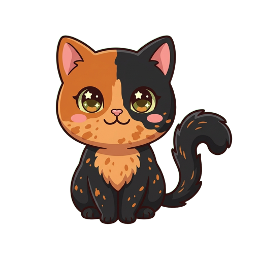

<!DOCTYPE html>
<html lang="en">
<head>
<meta charset="UTF-8">
<meta name="viewport" content="width=device-width, initial-scale=1.0">
<title>BizLingo — Learn Business, Playfully</title>
<meta name="description" content="A Duolingo-style game for learning business terms and concepts, in English, Spanish and Japanese.">
<meta name="theme-color" content="#58cc02">
<link rel="manifest" href="manifest.webmanifest">
<link rel="icon" type="image/png" href="icon-192.png">
<link rel="apple-touch-icon" href="apple-touch-icon.png">
<meta name="mobile-web-app-capable" content="yes">
<meta name="apple-mobile-web-app-capable" content="yes">
<meta name="apple-mobile-web-app-status-bar-style" content="default">
<meta name="apple-mobile-web-app-title" content="BizLingo">
<style>
  :root{
    --green:#58cc02; --green-dark:#46a302; --green-light:#d7ffb8;
    --blue:#1cb0f6; --blue-dark:#1899d6;
    --red:#ff4b4b; --red-dark:#ea2b2b; --red-light:#ffdfe0;
    --gold:#ffc800; --orange:#ff9600;
    --ink:#3c3c3c; --gray:#777; --line:#e5e5e5; --bg:#f7f7f7;
    --purple:#ce82ff;
  }
  *{box-sizing:border-box; -webkit-tap-highlight-color:transparent;}
  body{
    margin:0; background:var(--bg); color:var(--ink);
    font-family:-apple-system, BlinkMacSystemFont, "Segoe UI", Roboto, "Helvetica Neue", Arial, sans-serif;
  }
  button{font-family:inherit;}
  #app{max-width:640px; margin:0 auto; min-height:100vh; padding:0 16px 90px;}

  /* ---------- shared ---------- */
  .btn{
    display:inline-block; border:none; border-radius:14px; cursor:pointer;
    font-weight:800; font-size:16px; letter-spacing:.6px; text-transform:uppercase;
    padding:14px 28px; color:#fff; background:var(--green);
    box-shadow:0 4px 0 var(--green-dark); transition:filter .1s, transform .05s;
  }
  .btn:active{transform:translateY(3px); box-shadow:0 1px 0 var(--green-dark);}
  .btn:disabled{background:var(--line); box-shadow:0 4px 0 #cfcfcf; color:#aaa; cursor:default;}
  .btn.blue{background:var(--blue); box-shadow:0 4px 0 var(--blue-dark);}
  .btn.blue:active{box-shadow:0 1px 0 var(--blue-dark);}
  .btn.red{background:var(--red); box-shadow:0 4px 0 var(--red-dark);}
  .btn.ghost{background:#fff; color:var(--blue); border:2px solid var(--line); box-shadow:0 4px 0 var(--line);}
  .card{background:#fff; border:2px solid var(--line); border-radius:16px; padding:18px;}

  /* ---------- header ---------- */
  header{
    display:flex; align-items:center; justify-content:space-between; gap:10px;
    padding:14px 0; position:sticky; top:0; background:var(--bg); z-index:5;
  }
  .logo{font-size:24px; font-weight:900; color:var(--green); letter-spacing:-.5px;}
  .stats{display:flex; gap:14px; align-items:center; font-weight:800; font-size:15px;}
  .stat{display:flex; align-items:center; gap:4px;}
  .stat.streak{color:var(--orange);} .stat.xp{color:var(--gold);} .stat.hearts{color:var(--red);}
  .langbtn{
    border:2px solid var(--line); background:#fff; border-radius:12px;
    padding:6px 10px; font-size:18px; cursor:pointer; font-weight:700;
  }

  /* ---------- language select ---------- */
  .langselect{text-align:center; padding-top:8vh;}
  .mascot-big{font-size:84px; line-height:1;}
  .mascot-hero{display:block; width:210px; max-width:60%; height:auto; margin:0 auto;
    filter:drop-shadow(0 8px 9px rgba(80,50,20,.18)); animation:catbob 3.4s ease-in-out infinite;}
  @keyframes catbob{0%,100%{transform:translateY(0) rotate(-1.5deg)}50%{transform:translateY(-9px) rotate(1.5deg)}}
  .mascot-complete{display:block; width:150px; height:auto; margin:0 auto 4px;
    filter:drop-shadow(0 6px 8px rgba(80,50,20,.18)); animation:catpop .6s ease-out;}
  @keyframes catpop{0%{transform:scale(.4); opacity:0}60%{transform:scale(1.12)}100%{transform:scale(1)}}
  .langselect h1{font-size:30px; margin:14px 0 6px;}
  .langselect p{color:var(--gray); margin:0 0 26px; font-size:17px;}
  .langgrid{display:flex; flex-direction:column; gap:12px; max-width:360px; margin:0 auto;}
  .langopt{
    display:flex; align-items:center; gap:14px; padding:16px 20px; font-size:19px; font-weight:800;
    background:#fff; border:2px solid var(--line); border-bottom-width:4px; border-radius:16px; cursor:pointer;
  }
  .langopt:hover{background:#f0f9ff; border-color:var(--blue);}
  .langopt .flag{font-size:30px;}

  /* ---------- home / path ---------- */
  .unit-banner{
    border-radius:16px; padding:16px 20px; color:#fff; margin:26px 0 18px;
    display:flex; justify-content:space-between; align-items:center; gap:10px;
  }
  .unit-banner h2{margin:0; font-size:19px;} .unit-banner p{margin:3px 0 0; opacity:.9; font-size:14px;}
  .unit-banner .unum{font-size:12px; font-weight:800; text-transform:uppercase; letter-spacing:1px; opacity:.85;}
  .path{display:flex; flex-direction:column; align-items:center; gap:18px; padding:4px 0 8px;}
  .node-row{width:100%; display:flex; justify-content:center;}
  .node-row.l{justify-content:flex-start; padding-left:22%;}
  .node-row.r{justify-content:flex-end; padding-right:22%;}
  .node{
    width:76px; height:76px; border-radius:50%; border:none; cursor:pointer;
    font-size:30px; display:flex; align-items:center; justify-content:center;
    background:var(--green); box-shadow:0 6px 0 var(--green-dark); color:#fff; position:relative;
  }
  .node:active{transform:translateY(4px); box-shadow:0 2px 0 var(--green-dark);}
  .node.done{background:var(--gold); box-shadow:0 6px 0 #d4a600;}
  .node.locked{background:#e5e5e5; box-shadow:0 6px 0 #cfcfcf; cursor:default; color:#afafaf;}
  .node .label{
    position:absolute; top:84px; left:50%; transform:translateX(-50%);
    width:130px; text-align:center; font-size:12.5px; font-weight:800; color:var(--gray); pointer-events:none;
  }
  .node-row{margin-bottom:26px;}
  .start-tip{
    position:absolute; top:-44px; left:50%; transform:translateX(-50%);
    background:#fff; border:2px solid var(--line); border-radius:10px; color:var(--green);
    font-size:12px; font-weight:900; padding:6px 12px; text-transform:uppercase; letter-spacing:1px;
    animation:bob 1s ease-in-out infinite alternate; white-space:nowrap;
  }
  @keyframes bob{from{transform:translate(-50%,0)}to{transform:translate(-50%,-6px)}}
  .ach-row{display:flex; gap:10px; flex-wrap:wrap; margin-top:8px;}
  .ach{
    display:flex; align-items:center; gap:8px; background:#fff; border:2px solid var(--line);
    border-radius:12px; padding:8px 12px; font-size:13px; font-weight:800; color:var(--gray);
  }
  .ach.won{border-color:var(--gold); color:var(--ink); background:#fff9e5;}
  .ach .ic{font-size:18px; filter:grayscale(1); opacity:.5;}
  .ach.won .ic{filter:none; opacity:1;}
  h3.sec{margin:28px 0 10px; font-size:17px;}

  /* ---------- lesson ---------- */
  .lesson-top{display:flex; align-items:center; gap:14px; padding:16px 0;}
  .quitx{border:none; background:none; font-size:22px; color:#b5b5b5; cursor:pointer; font-weight:800;}
  .pbar{flex:1; height:14px; background:#e5e5e5; border-radius:8px; overflow:hidden;}
  .pbar > div{height:100%; background:var(--green); border-radius:8px; transition:width .4s ease; min-width:0;}
  .lhearts{font-weight:800; color:var(--red); font-size:16px; display:flex; gap:3px; align-items:center;}
  .qtype{color:var(--purple); font-weight:900; font-size:13px; text-transform:uppercase; letter-spacing:1px; margin:14px 0 6px;}
  .qtext{font-size:21px; font-weight:800; margin:0 0 20px; line-height:1.35;}
  .qtext .blank{
    display:inline-block; min-width:90px; border-bottom:3px solid #b5b5b5; text-align:center;
    color:var(--blue); padding:0 6px;
  }
  .term{
    text-decoration:underline dotted 2px; text-decoration-color:var(--blue);
    text-underline-offset:3px; cursor:help;
  }
  .unit-banner .term{text-decoration-color:rgba(255,255,255,.85);}
  #tooltip{
    position:fixed; z-index:100; display:none; pointer-events:none;
    background:#3c3c3c; color:#fff; padding:10px 14px; border-radius:12px;
    font-size:13.5px; font-weight:600; line-height:1.5; max-width:270px;
    box-shadow:0 8px 22px rgba(0,0,0,.28);
  }
  #tooltip b{color:var(--gold); display:block; margin-bottom:2px;}
  .opts{display:flex; flex-direction:column; gap:10px;}
  .opt{
    text-align:left; background:#fff; border:2px solid var(--line); border-bottom-width:4px;
    border-radius:14px; padding:14px 16px; font-size:16.5px; font-weight:700; cursor:pointer; color:var(--ink);
  }
  .opt:hover{background:#fafafa;}
  .opt.sel{border-color:var(--blue); background:#ddf4ff; color:var(--blue-dark);}
  .opt.right{border-color:var(--green); background:var(--green-light); color:var(--green-dark);}
  .opt.wrong{border-color:var(--red); background:var(--red-light); color:var(--red-dark);}
  .tfrow{display:flex; gap:12px;}
  .tfrow .opt{flex:1; text-align:center; font-size:18px;}

  .bank{display:flex; flex-wrap:wrap; gap:10px; margin-top:18px;}
  .tile{
    background:#fff; border:2px solid var(--line); border-bottom-width:4px; border-radius:12px;
    padding:10px 16px; font-size:16px; font-weight:800; cursor:pointer;
  }
  .tile.used{opacity:.35; cursor:default;}

  .matchgrid{display:grid; grid-template-columns:1fr 1fr; gap:10px;}
  .mitem{
    background:#fff; border:2px solid var(--line); border-bottom-width:4px; border-radius:12px;
    padding:13px 12px; font-size:14.5px; font-weight:700; cursor:pointer; text-align:center;
  }
  .mitem.sel{border-color:var(--blue); background:#ddf4ff;}
  .mitem.done{border-color:var(--line); background:#f3f3f3; color:#bbb; cursor:default;}
  .mitem.shake{animation:shake .35s; border-color:var(--red); background:var(--red-light);}
  @keyframes shake{0%,100%{transform:translateX(0)}25%{transform:translateX(-6px)}75%{transform:translateX(6px)}}

  .footerbar{
    position:fixed; bottom:0; left:0; right:0; background:#fff; border-top:2px solid var(--line);
    padding:14px 16px calc(14px + env(safe-area-inset-bottom)); z-index:10;
  }
  .footerbar .inner{max-width:640px; margin:0 auto; display:flex; align-items:center; justify-content:space-between; gap:14px;}
  .footerbar.good{background:var(--green-light); border-color:var(--green-light);}
  .footerbar.bad{background:var(--red-light); border-color:var(--red-light);}
  .fb-msg{font-weight:900; font-size:17px;}
  .fb-msg.good{color:var(--green-dark);} .fb-msg.bad{color:var(--red-dark);}
  .fb-sub{font-size:14px; font-weight:600; margin-top:3px; color:var(--ink); opacity:.85;}

  /* ---------- complete ---------- */
  .complete{text-align:center; padding-top:9vh; position:relative;}
  .complete h1{font-size:30px; margin:10px 0 4px; color:var(--gold);}
  .complete p{color:var(--gray); font-size:17px; margin:0 0 26px;}
  .scorecards{display:flex; gap:12px; justify-content:center; margin-bottom:30px;}
  .scorecard{
    border:2px solid; border-radius:16px; min-width:120px; overflow:hidden; background:#fff;
  }
  .scorecard .top{color:#fff; font-size:12px; font-weight:900; text-transform:uppercase; letter-spacing:1px; padding:6px;}
  .scorecard .val{font-size:24px; font-weight:900; padding:12px 8px;}
  .sc-xp{border-color:var(--gold);} .sc-xp .top{background:var(--gold);} .sc-xp .val{color:var(--gold);}
  .sc-acc{border-color:var(--green);} .sc-acc .top{background:var(--green);} .sc-acc .val{color:var(--green);}

  .confetti{position:fixed; top:-12px; pointer-events:none; z-index:50; font-size:0;}
  .confetti i{display:block; width:10px; height:14px; border-radius:2px; animation:fall linear forwards;}
  @keyframes fall{to{transform:translateY(105vh) rotate(720deg); opacity:.6;}}

  .toast{
    position:fixed; top:18px; left:50%; transform:translateX(-50%); z-index:60;
    background:#fff; border:2px solid var(--gold); border-radius:14px; padding:12px 20px;
    font-weight:800; box-shadow:0 6px 18px rgba(0,0,0,.12); animation:toastin .3s ease;
    display:flex; gap:10px; align-items:center;
  }
  @keyframes toastin{from{transform:translate(-50%,-30px); opacity:0;}to{transform:translate(-50%,0); opacity:1;}}

  .modal-back{position:fixed; inset:0; background:rgba(0,0,0,.45); z-index:40; display:flex; align-items:center; justify-content:center; padding:20px;}
  .modal{background:#fff; border-radius:20px; padding:28px; max-width:380px; text-align:center;}
  .modal h2{margin:8px 0 8px;} .modal p{color:var(--gray); margin:0 0 20px;}

  /* ---------- rank + sharing ---------- */
  .rankcard{display:flex; align-items:center; gap:14px; background:#fff; border:2px solid var(--line); border-radius:16px; padding:14px 16px; margin:8px 0 4px;}
  .rankcard .rk-ic{font-size:38px; line-height:1;}
  .rankcard .rk-body{flex:1; min-width:0;}
  .rk-title{font-weight:900; font-size:16px;}
  .rk-bar{height:10px; background:#eee; border-radius:6px; overflow:hidden; margin:6px 0 4px;}
  .rk-bar>div{height:100%; background:var(--gold); border-radius:6px; transition:width .4s ease;}
  .rk-sub{font-size:12.5px; color:var(--gray); font-weight:700;}
  .rk-share{border:none; background:var(--blue); color:#fff; font-weight:800; font-size:14px; border-radius:12px; padding:10px 13px; cursor:pointer; box-shadow:0 3px 0 var(--blue-dark); white-space:nowrap;}
  .rk-share:active{transform:translateY(2px); box-shadow:0 1px 0 var(--blue-dark);}
  .scorecard-share{background:linear-gradient(135deg,#1cb0f6,#58cc02); border-radius:18px; padding:20px 16px; color:#fff; text-align:center; margin-bottom:16px;}
  .scorecard-share .sc-rank{font-size:46px; line-height:1;}
  .scorecard-share .sc-name{font-weight:900; font-size:20px; margin:6px 0 2px; word-break:break-word;}
  .scorecard-share .sc-rk{font-weight:800; opacity:.95; margin-bottom:14px;}
  .sc-stats{display:flex; justify-content:center; gap:8px; flex-wrap:wrap;}
  .sc-stat{background:rgba(255,255,255,.2); border-radius:12px; padding:8px 12px; min-width:62px;}
  .sc-stat .n{font-size:19px; font-weight:900;}
  .sc-stat .l{font-size:10px; font-weight:800; text-transform:uppercase; letter-spacing:.4px; opacity:.92;}
  .nameinput{width:100%; box-sizing:border-box; border:2px solid var(--line); border-radius:12px; padding:11px 13px; font-size:15px; font-weight:600; margin-bottom:14px;}
  .modal .row2{display:flex; gap:10px; justify-content:center; flex-wrap:wrap;}
  .friendwrap{padding-top:6vh; text-align:center;}

  /* ---------- animated anime cat ---------- */
  .catstage{
    position:relative; width:240px; height:190px; margin:0 auto;
    overflow:hidden; background:transparent;
  }
  /* full-screen sky + lawn scene on the opening screen */
  body.skybg{
    background:linear-gradient(180deg, #9fdcff 0%, #bfeaff 25%, #d6f4ad 31%, #b4e584 100%);
    background-attachment:fixed;
  }
  body.skybg .langselect p{color:#5f7a3f;}
  .catsvg{position:absolute; left:50%; top:8px; width:200px; height:170px; transform:translateX(-50%);}
  .cat-cap{
    text-align:center; font-weight:800; font-size:15px; color:var(--gray);
    margin:8px 0 0; min-height:20px;
  }
  /* line-art base */
  .catsvg .body,.catsvg .head,.catsvg .ear,.catsvg .leg,.catsvg .tailshape{
    fill:#eaa45a; stroke:#6b4226; stroke-width:3; stroke-linejoin:round; stroke-linecap:round;
  }
  .catsvg .ear-tip{fill:#d98a43; stroke:#6b4226; stroke-width:2.5; stroke-linejoin:round;}
  .catsvg .ear-in{fill:#eaa0ab;}
  .catsvg .belly,.catsvg .muzzle{fill:#f9efd9; stroke:none;}
  .catsvg .cheek{fill:#f4938a; opacity:.5;}
  .catsvg .stripe{fill:none; stroke:#c2772f; stroke-width:5; stroke-linecap:round; stroke-linejoin:round;}
  .catsvg .shadow{fill:rgba(80,50,20,.13);}
  .catsvg .nose{fill:#c06a6a; stroke:#6b4226; stroke-width:1.2; stroke-linejoin:round;}
  .catsvg .pupil{fill:#4a2f1c;} .catsvg .glint{fill:#fff;} .catsvg .glint2{fill:#fff; opacity:.85;}
  .catsvg .eyewhite{fill:#fff; stroke:#6b4226; stroke-width:2;}
  .catsvg .iris{fill:#e0992f;}
  .catsvg .hi{fill:#fff; opacity:.28;} .catsvg .shade{fill:#6b4226; opacity:.08;}
  .catsvg .eyeline,.catsvg .mouth,.catsvg .whisker{fill:none; stroke:#6b4226; stroke-width:3; stroke-linecap:round; stroke-linejoin:round;}
  .catsvg .whisker{stroke-width:1.8;}
  .catsvg .mouthyawn{fill:#cf6a6a; stroke:#6b4226; stroke-width:1.5;}
  .catsvg .mouthyawn,.catsvg .zzz,.catsvg .yarn,.catsvg .bush{opacity:0;}
  .catsvg .eyes-closed{opacity:0;} .catsvg .eyes-open{opacity:1;}
  .catsvg .yarn{fill:#ff7b54; stroke:#c44; stroke-width:1.5;}
  .catsvg .yarnline{fill:none; stroke:#fff; stroke-width:1.2; opacity:.8;}
  .catsvg .bush{fill:#58cc02; stroke:#3c3c3c; stroke-width:3;}

  /* transform pivots */
  .catsvg .cat-inner{transform-box:fill-box; transform-origin:center;}
  .catsvg .tail{transform-box:fill-box; transform-origin:18% 88%;}
  .catsvg .legFL,.catsvg .legFR,.catsvg .legBL,.catsvg .legBR{transform-box:fill-box; transform-origin:50% 6%;}
  .catsvg .breathe{transform-box:fill-box; transform-origin:center;}
  .catsvg .zzz{transform-box:fill-box; transform-origin:center;}

  /* big sparkly eyes by default, with a gentle blink; eyes shut for nap & yawn */
  .cat:not(.nap):not(.yawn) .eyes-open{animation:blinkO 5s infinite;}
  .cat:not(.nap):not(.yawn) .eyes-closed{animation:blinkC 5s infinite;}
  @keyframes blinkO{0%,94%,100%{opacity:1}96%,99%{opacity:0}}
  @keyframes blinkC{0%,94%,100%{opacity:0}96%,99%{opacity:1}}
  .cat.nap .eyes-open,.cat.yawn .eyes-open{opacity:0;}
  .cat.nap .eyes-closed,.cat.yawn .eyes-closed{opacity:1;}

  /* SIT — gentle bob + tail sway */
  .cat.sit .cat-inner{animation:bob 2.4s ease-in-out infinite;}
  .cat.sit .tail{animation:tail 2.2s ease-in-out infinite;}
  @keyframes bob{0%,100%{transform:translateY(0)}50%{transform:translateY(-4px)}}
  @keyframes tail{0%,100%{transform:rotate(-6deg)}50%{transform:rotate(16deg)}}

  /* WALK — legs swing + body bob, ambles side to side */
  .cat.walk .cat-inner{animation:stroll 5s ease-in-out infinite;}
  .cat.walk .legFL,.cat.walk .legBR{animation:legA .5s ease-in-out infinite;}
  .cat.walk .legFR,.cat.walk .legBL{animation:legB .5s ease-in-out infinite;}
  .cat.walk .tail{animation:tail 1s ease-in-out infinite;}
  @keyframes stroll{0%{transform:translateX(-46px)}50%{transform:translateX(46px) scaleX(-1)}50.01%{transform:translateX(46px) scaleX(-1)}100%{transform:translateX(-46px)}}
  @keyframes legA{0%,100%{transform:rotate(16deg)}50%{transform:rotate(-16deg)}}
  @keyframes legB{0%,100%{transform:rotate(-16deg)}50%{transform:rotate(16deg)}}

  /* CHASE — fast legs, lean forward, yarn rolls ahead */
  .cat.chase .cat-inner{animation:chaseBob .26s ease-in-out infinite; transform:rotate(-8deg);}
  .cat.chase .legFL,.cat.chase .legBR{animation:legA .26s linear infinite;}
  .cat.chase .legFR,.cat.chase .legBL{animation:legB .26s linear infinite;}
  .cat.chase .yarn{opacity:1; animation:yarnRoll 1.6s linear infinite;}
  @keyframes chaseBob{0%,100%{transform:rotate(-8deg) translateY(0)}50%{transform:rotate(-8deg) translateY(-3px)}}
  @keyframes yarnRoll{0%{transform:translateX(40px) rotate(0)}100%{transform:translateX(-30px) rotate(-540deg)}}

  /* ROLL — tumbles over */
  .cat.roll .cat-inner{animation:rollover 1.7s ease-in-out infinite;}
  @keyframes rollover{0%{transform:translateX(-26px) rotate(0)}100%{transform:translateX(26px) rotate(360deg)}}

  /* YAWN — head tilts, big mouth opens, eyes squint */
  .cat.yawn .head{animation:yawnHead 3.2s ease-in-out;}
  .cat.yawn .mouthyawn{animation:yawnMouth 3.2s ease-in-out;}
  .cat.yawn .mouth{opacity:0;}
  @keyframes yawnHead{0%,100%{transform:rotate(0)}25%,70%{transform:rotate(-7deg)}}
  @keyframes yawnMouth{0%,12%,92%,100%{opacity:0; transform:scale(.3)}30%,70%{opacity:1; transform:scale(1)}}

  /* NAP — lies down, breathes, Zzz floats */
  .cat.nap .cat-inner{transform:rotate(9deg) translateY(10px);}
  .cat.nap .breathe{animation:breathe 2.6s ease-in-out infinite;}
  .cat.nap .legFL,.cat.nap .legFR,.cat.nap .legBL,.cat.nap .legBR{transform:scaleY(.45);}
  .cat.nap .tail{transform:rotate(28deg);}
  .cat.nap .zzz{opacity:1; animation:zzz 2.6s ease-out infinite;}
  @keyframes breathe{0%,100%{transform:scale(1)}50%{transform:scale(1.05)}}
  @keyframes zzz{0%{opacity:0; transform:translate(0,0) scale(.6)}30%{opacity:1}100%{opacity:0; transform:translate(14px,-26px) scale(1.1)}}

  /* HIDE — ducks behind the bush, peeks, ducks again */
  .cat.hide .bush{opacity:1;}
  .cat.hide .cat-inner{animation:hide 4.4s ease-in-out;}
  @keyframes hide{0%{transform:translateY(0)}22%,100%{transform:translateY(78px)}55%{transform:translateY(40px)}78%{transform:translateY(78px)}}
</style>
</head>
<body>
<div id="app"></div>
<script>
"use strict";

/* ================= i18n UI strings ================= */
const I18N = {
en:{
  name:"English", flag:"🇺🇸",
  tagline:"Learn business the fun way", choose:"I want to learn in…",
  welcome:"Hi! I'm Bizzy. Let's turn you into an entrepreneur — one lesson at a time.",
  start:"Start", continueBtn:"Continue", check:"Check", lesson:"Lesson", unit:"Unit",
  correct:"Nice! Correct!", correctAlts:["Excellent!","You've got the business brain!","Nailed it!","Spot on!"],
  wrong:"Not quite.", answerWas:"Correct answer:", tryLater:"You'll see this one again.",
  done:"Lesson complete!", perfect:"PERFECT lesson! +5 bonus XP", earned:"XP earned", accuracy:"Accuracy",
  home:"Back to path", quitTitle:"Leave the lesson?", quitBody:"Your progress in this lesson will be lost.",
  stay:"Keep learning", leave:"Leave", noHearts:"You're out of hearts!",
  noHeartsBody:"Hearts refill every day. Tip: replaying a completed (gold) lesson is practice mode — no hearts needed!",
  ok:"Got it", practice:"Practice mode — no hearts at risk!", typeMC:"Select the correct answer",
  typeTF:"True or false?", typeFIB:"Tap the word that completes the sentence", typeMATCH:"Match the pairs",
  trueW:"True", falseW:"False", achievements:"Achievements", startHere:"Start",
  ach:{first:"First Steps — complete your first lesson", perfect:"Flawless — finish a lesson with no mistakes",
       unit:"Unit Champion — complete a whole unit", xp100:"Centurion — earn 100 XP", streak3:"On Fire — 3-day streak"},
  achUnlocked:"Achievement unlocked!",
  dayStreak:"day streak",
  share:"Share my progress", shareBtn:"Share", copyLink:"Copy link", copied:"Link copied to clipboard!",
  yourName:"Your name (optional)", shareTitle:"Share your progress", shareSub:"Challenge a friend to beat it!",
  rank:"Rank", lessonsDone:"Lessons", topRank:"Top rank — you run the show!",
  friendIntro:"shared their BizLingo scorecard!", beatScore:"Beat their score", startLearning:"Start learning",
  ranks:{intern:"Intern", associate:"Associate", manager:"Manager", director:"Director", vp:"VP", founder:"Founder"},
},
es:{
  name:"Español", flag:"🇪🇸",
  tagline:"Aprende negocios de forma divertida", choose:"Quiero aprender en…",
  welcome:"¡Hola! Soy Bizzy. Vamos a convertirte en emprendedor — una lección a la vez.",
  start:"Empezar", continueBtn:"Continuar", check:"Comprobar", lesson:"Lección", unit:"Unidad",
  correct:"¡Muy bien! ¡Correcto!", correctAlts:["¡Excelente!","¡Tienes mente de negocios!","¡Perfecto!","¡Exacto!"],
  wrong:"No exactamente.", answerWas:"Respuesta correcta:", tryLater:"Volverás a ver esta pregunta.",
  done:"¡Lección completada!", perfect:"¡Lección PERFECTA! +5 XP extra", earned:"XP ganados", accuracy:"Precisión",
  home:"Volver al camino", quitTitle:"¿Salir de la lección?", quitBody:"Perderás tu progreso en esta lección.",
  stay:"Seguir aprendiendo", leave:"Salir", noHearts:"¡Te quedaste sin corazones!",
  noHeartsBody:"Los corazones se recargan cada día. Consejo: repetir una lección completada (dorada) es modo práctica — ¡sin corazones!",
  ok:"Entendido", practice:"Modo práctica — ¡sin riesgo de corazones!", typeMC:"Selecciona la respuesta correcta",
  typeTF:"¿Verdadero o falso?", typeFIB:"Toca la palabra que completa la frase", typeMATCH:"Une las parejas",
  trueW:"Verdadero", falseW:"Falso", achievements:"Logros", startHere:"Empieza",
  ach:{first:"Primeros pasos — completa tu primera lección", perfect:"Impecable — termina una lección sin errores",
       unit:"Campeón de unidad — completa una unidad entera", xp100:"Centurión — gana 100 XP", streak3:"En llamas — racha de 3 días"},
  achUnlocked:"¡Logro desbloqueado!",
  dayStreak:"días de racha",
  share:"Compartir mi progreso", shareBtn:"Compartir", copyLink:"Copiar enlace", copied:"¡Enlace copiado!",
  yourName:"Tu nombre (opcional)", shareTitle:"Comparte tu progreso", shareSub:"¡Reta a un amigo a superarlo!",
  rank:"Rango", lessonsDone:"Lecciones", topRank:"¡Rango máximo — mandas tú!",
  friendIntro:"compartió su tarjeta de BizLingo:", beatScore:"Supera su puntuación", startLearning:"Empezar a aprender",
  ranks:{intern:"Becario", associate:"Asociado", manager:"Gerente", director:"Director", vp:"Vicepresidente", founder:"Fundador"},
},
ja:{
  name:"日本語", flag:"🇯🇵",
  tagline:"楽しくビジネスを学ぼう", choose:"学習する言語を選んでください…",
  welcome:"こんにちは！ビジーだよ。1レッスンずつ、君を起業家にしていこう！",
  start:"スタート", continueBtn:"続ける", check:"チェック", lesson:"レッスン", unit:"ユニット",
  correct:"やったね！正解！", correctAlts:["すばらしい！","ビジネスの才能あり！","お見事！","その通り！"],
  wrong:"おしい！", answerWas:"正解：", tryLater:"この問題はあとでもう一度出てくるよ。",
  done:"レッスン完了！", perfect:"パーフェクト！ボーナス +5 XP", earned:"獲得XP", accuracy:"正答率",
  home:"マップに戻る", quitTitle:"レッスンをやめますか？", quitBody:"このレッスンの進捗は失われます。",
  stay:"学習を続ける", leave:"やめる", noHearts:"ハートがなくなった！",
  noHeartsBody:"ハートは毎日回復します。ヒント：クリア済み（金色）のレッスンは練習モードなので、ハートは減りません！",
  ok:"わかった", practice:"練習モード — ハートは減りません！", typeMC:"正しい答えを選ぼう",
  typeTF:"○か×か？", typeFIB:"文を完成させる言葉をタップしよう", typeMATCH:"ペアを選ぼう",
  trueW:"正しい", falseW:"間違い", achievements:"実績", startHere:"スタート",
  ach:{first:"はじめの一歩 — 最初のレッスンを完了", perfect:"完璧 — ノーミスでレッスンを完了",
       unit:"ユニット制覇 — ユニットを全部完了", xp100:"百人隊長 — 100 XPを獲得", streak3:"絶好調 — 3日連続で学習"},
  achUnlocked:"実績を達成！",
  dayStreak:"日連続",
  share:"進捗をシェア", shareBtn:"シェア", copyLink:"リンクをコピー", copied:"リンクをコピーしました！",
  yourName:"お名前（任意）", shareTitle:"進捗をシェアしよう", shareSub:"友だちに挑戦状を！",
  rank:"ランク", lessonsDone:"レッスン", topRank:"最高ランク — あなたがボス！",
  friendIntro:"さんがBizLingoのスコアを送ってきました！", beatScore:"スコアを超えろ", startLearning:"学習を始める",
  ranks:{intern:"インターン", associate:"アソシエイト", manager:"マネージャー", director:"ディレクター", vp:"バイスプレジデント", founder:"創業者"},
},
};

/* ================= Course content =================
   Question types:
   mc    {t,q,c(orrect),w(rong[3]),exp}
   tf    {t,q,a(bool),exp}
   fib   {t,q(with ___),bank[],a,exp}
   match {t,pairs[[l,r]x4]}
*/
const CONTENT = {
/* ---------------- ENGLISH ---------------- */
en:[
{ title:"Business Basics", desc:"Revenue, profit and the language of money", color:"#58cc02", icon:"💼",
  lessons:[
  { name:"Money In, Money Out", icon:"💵", qs:[
    {t:"mc", q:'What is "revenue"?', c:"The total money a business earns from sales",
      w:["The money left after paying expenses","Money borrowed from a bank","Money invested by the founders"],
      exp:"Revenue is the top line — everything you earn before any costs are subtracted."},
    {t:"fib", q:"Profit = Revenue − ___", bank:["Expenses","Assets","Customers","Ideas"], a:"Expenses",
      exp:"Profit is what remains after subtracting all expenses from revenue."},
    {t:"tf", q:"A business can have high revenue and still lose money.", a:true,
      exp:"True — if expenses are higher than revenue, the business loses money."},
    {t:"match", pairs:[["Revenue","Money earned from sales"],["Expense","Money spent to operate"],
      ["Profit","Revenue minus expenses"],["Loss","When expenses exceed revenue"]]},
  ]},
  { name:"Cash is King", icon:"👑", qs:[
    {t:"mc", q:'What is "cash flow"?', c:"The movement of money in and out of a business",
      w:["The total value of a company","A type of bank account","The salary paid to employees"],
      exp:"Cash flow tracks when money actually enters and leaves your business."},
    {t:"tf", q:"A profitable company can never run out of cash.", a:false,
      exp:"False — if customers pay late while bills are due now, even profitable companies can run dry."},
    {t:"fib", q:"The ___ point is where total revenue equals total costs.", bank:["break-even","pivot","equity","branding"], a:"break-even",
      exp:"At break-even you make no profit and no loss — every sale after it earns profit."},
    {t:"mc", q:"Which of these is a fixed cost?", c:"Monthly office rent",
      w:["Raw materials for each product","Shipping for each order","Sales commissions"],
      exp:"Fixed costs stay the same no matter how much you sell. Rent is due regardless."},
  ]},
  { name:"Customers & Value", icon:"🎯", qs:[
    {t:"mc", q:'What is a "target market"?', c:"The specific group of people most likely to buy your product",
      w:["Every person in the world","The store where you sell","Your list of competitors"],
      exp:"Trying to sell to everyone usually means selling to no one. Focus wins."},
    {t:"fib", q:"A ___ proposition explains why customers should choose you.", bank:["value","tax","supply","legal"], a:"value",
      exp:"Your value proposition is the promise of what makes your offer worth buying."},
    {t:"match", pairs:[["B2B","Selling to other businesses"],["B2C","Selling to consumers"],
      ["Niche","A small, specialized market"],["Demand","How much customers want a product"]]},
    {t:"tf", q:"A niche market is always a bad choice because it is small.", a:false,
      exp:"False — niches often mean less competition and more loyal customers."},
  ]},
]},
{ title:"Marketing & Sales", desc:"Win customers and keep them coming back", color:"#1cb0f6", icon:"📣",
  lessons:[
  { name:"Know Your Brand", icon:"✨", qs:[
    {t:"mc", q:'What is "branding"?', c:"The identity and personality of your business",
      w:["Printing labels on products","A type of advertisement","The legal name registration"],
      exp:"Your brand is how people feel about your business — beyond just a logo."},
    {t:"tf", q:"A logo is the only part of a brand.", a:false,
      exp:"False — brand includes your voice, values, design, and customer experience."},
    {t:"fib", q:"Word-of-___ marketing happens when customers recommend you to others.", bank:["mouth","paper","wallet","office"], a:"mouth",
      exp:"Word-of-mouth is free and powerful — happy customers become your marketers."},
    {t:"mc", q:'What is a "unique selling point" (USP)?', c:"What makes your product different from competitors",
      w:["The lowest possible price","The store with the most products","A one-time discount"],
      exp:"Your USP answers the customer's question: why buy from YOU?"},
  ]},
  { name:"Winning Customers", icon:"🏆", qs:[
    {t:"mc", q:'What does "CAC" stand for?', c:"Customer Acquisition Cost — the money spent to win one new customer",
      w:["Company Annual Capital","Corporate Accounting Code","Customer Average Cart"],
      exp:"If you spend $100 on ads to get 10 customers, your CAC is $10."},
    {t:"fib", q:"Customer ___ measures how many customers keep coming back.", bank:["retention","taxation","insurance","inflation"], a:"retention",
      exp:"High retention means customers stay loyal — usually cheaper than finding new ones."},
    {t:"match", pairs:[["Lead","A potential customer"],["Conversion","Turning a lead into a buyer"],
      ["Churn","Customers who stop buying"],["Loyalty","Customers who keep returning"]]},
    {t:"tf", q:"It usually costs less to keep an existing customer than to find a new one.", a:true,
      exp:"True — acquiring a new customer can cost 5x more than retaining one."},
  ]},
  { name:"The Sales Funnel", icon:"🌪️", qs:[
    {t:"fib", q:"The sales ___ shows the customer journey from awareness to purchase.", bank:["funnel","ladder","bridge","wallet"], a:"funnel",
      exp:"It's called a funnel because many people enter at the top, fewer buy at the bottom."},
    {t:"mc", q:"What is usually the FIRST stage of a sales funnel?", c:"Awareness — people discover you exist",
      w:["Purchase — people buy","Loyalty — people return","Refund — people return products"],
      exp:"Before anyone can buy, they need to know you exist."},
    {t:"tf", q:"Every person who hears about your product will buy it.", a:false,
      exp:"False — only a fraction converts at each stage. That's why the funnel narrows."},
    {t:"mc", q:'What is an "upsell"?', c:"Encouraging a customer to buy a bigger or better option",
      w:["Selling a product at a loss","Closing the store early","Refusing small orders"],
      exp:'"Would you like a large for $1 more?" — that\'s an upsell.'},
  ]},
]},
{ title:"Money & Finance", desc:"Assets, margins and funding your dream", color:"#ce82ff", icon:"🏦",
  lessons:[
  { name:"The Balance Sheet", icon:"⚖️", qs:[
    {t:"match", pairs:[["Asset","Something valuable the business owns"],["Liability","Money the business owes"],
      ["Equity","The owners' share of the business"],["Debt","Borrowed money that must be repaid"]]},
    {t:"mc", q:"Which of these is an ASSET?", c:"A delivery van owned by the company",
      w:["An unpaid supplier invoice","A bank loan to repay","Next month's rent bill"],
      exp:"Assets are things of value you own — vehicles, cash, equipment, inventory."},
    {t:"tf", q:"A bank loan is an asset for the business that receives it.", a:false,
      exp:"False — a loan must be repaid, so it's a liability. The cash received is the asset."},
    {t:"fib", q:"The accounting equation: Assets = Liabilities + ___", bank:["Equity","Revenue","Marketing","Inventory"], a:"Equity",
      exp:"This equation is the foundation of every balance sheet."},
  ]},
  { name:"Margins & Returns", icon:"📈", qs:[
    {t:"mc", q:'What is a "profit margin"?', c:"The percentage of revenue you keep as profit",
      w:["The space at the edge of an invoice","The total number of sales","The price of your cheapest product"],
      exp:"Margin = profit ÷ revenue. It shows how efficiently you turn sales into profit."},
    {t:"fib", q:"ROI stands for Return On ___", bank:["Investment","Internet","Inventory","Income"], a:"Investment",
      exp:"ROI measures how much you gain compared to what you put in."},
    {t:"tf", q:"A 10% profit margin means you keep $10 of every $100 in sales.", a:true,
      exp:"True — margin is profit expressed as a percentage of revenue."},
    {t:"mc", q:"You buy a product for $50 and sell it for $80. What is your gross profit?", c:"$30",
      w:["$80","$50","$130"],
      exp:"Gross profit = selling price − cost = $80 − $50 = $30."},
  ]},
  { name:"Funding Your Dream", icon:"🚀", qs:[
    {t:"mc", q:'What does "bootstrapping" mean?', c:"Funding your business with your own money and its revenues",
      w:["Hiring your first employee","Copying a competitor's idea","Closing the business"],
      exp:"Bootstrappers grow without outside investors — keeping full control."},
    {t:"match", pairs:[["Investor","Gives money for a share of the business"],["Loan","Borrowed money repaid with interest"],
      ["Crowdfunding","Many small contributions, often online"],["Grant","Money you don't have to repay"]]},
    {t:"fib", q:"Giving investors shares means giving up some ___ in your company.", bank:["equity","furniture","customers","branding"], a:"equity",
      exp:"Investment money isn't free — you trade ownership (equity) for capital."},
    {t:"tf", q:"Venture capital investors usually expect fast growth.", a:true,
      exp:"True — VCs bet on startups that can grow very big, very fast."},
  ]},
]},
{ title:"Strategy & Growth", desc:"Think like a founder, grow like a pro", color:"#ff9600", icon:"🧭",
  lessons:[
  { name:"Plan to Win", icon:"🗺️", qs:[
    {t:"mc", q:'A "business model" describes…', c:"How a business creates value and makes money",
      w:["The building where you work","A famous entrepreneur","A government license"],
      exp:"Your business model answers: who do you serve, what do you offer, how do you earn?"},
    {t:"fib", q:"MVP stands for Minimum ___ Product.", bank:["Viable","Valuable","Visible","Virtual"], a:"Viable",
      exp:"An MVP is the simplest version that lets you test your idea with real customers."},
    {t:"tf", q:"An MVP should include every feature you can imagine.", a:false,
      exp:"False — the whole point is to launch small, learn fast, and improve."},
    {t:"mc", q:'What is a "competitive advantage"?', c:"Something that lets you consistently outperform rivals",
      w:["Having the biggest office","Working the longest hours","Having the most meetings"],
      exp:"It could be lower costs, better technology, a stronger brand, or unique know-how."},
  ]},
  { name:"Adapt & Grow", icon:"🌱", qs:[
    {t:"mc", q:'In a startup, what is a "pivot"?', c:"A significant change in strategy based on what you've learned",
      w:["A type of office chair","Firing all employees","Doubling all prices"],
      exp:"Instagram pivoted from a check-in app to photos. Pivoting is learning, not failing."},
    {t:"fib", q:"A business is ___ if it can grow revenue without costs growing as fast.", bank:["scalable","expensive","seasonal","offline"], a:"scalable",
      exp:"Software is highly scalable: one more user costs almost nothing to serve."},
    {t:"match", pairs:[["Pivot","Change direction based on learning"],["Scale","Grow efficiently"],
      ["Milestone","A key progress goal"],["KPI","A number that tracks performance"]]},
    {t:"tf", q:"A SMART goal is Specific, Measurable, Achievable, Relevant and Time-bound.", a:true,
      exp:'True — "get 100 paying customers by June" beats "do better".'},
  ]},
  { name:"The Founder Mindset", icon:"🧠", qs:[
    {t:"mc", q:'What is an "entrepreneur"?', c:"Someone who starts and runs a business, taking on risk",
      w:["Someone who only invests in stocks","Any person with a job","A government official"],
      exp:"Entrepreneurs spot opportunities and accept risk to build something new."},
    {t:"tf", q:"Failure always means an entrepreneur should give up.", a:false,
      exp:"False — most successful founders failed first. Each failure teaches what doesn't work."},
    {t:"fib", q:"A short, persuasive description of your business is an elevator ___.", bank:["pitch","button","ride","door"], a:"pitch",
      exp:"If you can't explain your idea in 30 seconds, keep refining it."},
    {t:"mc", q:'"Networking" means…', c:"Building professional relationships that can help your business",
      w:["Installing internet cables","Watching TV shows","Avoiding other founders"],
      exp:"Your network brings advice, customers, partners, and investors."},
  ]},
]},
{ title:"Who Runs the Company", desc:"Leaders, roles and how a company is organized", color:"#ff4b4b", icon:"👔",
  lessons:[
  { name:"Meet the C-Suite", icon:"👔", qs:[
    {t:"mc", q:"What does a CEO (Chief Executive Officer) do?", c:"Sets the overall vision and is ultimately responsible for the company's success",
      w:["Keeps the day-to-day financial books","Personally builds every single product","Cleans and maintains the office"],
      exp:"The CEO is the top leader — strategy, the biggest decisions, and accountability to the owners and board."},
    {t:"mc", q:"What does a CFO (Chief Financial Officer) lead?", c:"The company's money: budgets, financial reporting and fundraising",
      w:["The hiring of new salespeople","The design of the product","The daily social media posts"],
      exp:"The CFO is the top finance leader, in charge of cash, accounting and financial strategy."},
    {t:"mc", q:"What does a COO (Chief Operating Officer) focus on?", c:"Running day-to-day operations so the business delivers smoothly",
      w:["Setting the company's stock price","Owning 100% of the shares","Approving every customer review"],
      exp:"The COO keeps the engine running — operations, processes and execution."},
    {t:"match", pairs:[["CEO","Overall vision and final accountability"],["CFO","Money, budgets and reporting"],
      ["COO","Day-to-day operations"],["Board of directors","Oversees and advises the CEO"]]},
  ]},
  { name:"More Key Roles", icon:"🧑‍💼", qs:[
    {t:"mc", q:"What does a CMO (Chief Marketing Officer) lead?", c:"Marketing, brand and customer growth",
      w:["The company's tax returns","The factory machinery","The legal contracts"],
      exp:"The CMO owns how the business attracts and keeps customers."},
    {t:"mc", q:"A CTO (Chief Technology Officer) is mainly responsible for…", c:"Technology, product engineering and technical strategy",
      w:["Greeting customers at the door","Signing every paycheck","Choosing the office furniture"],
      exp:"The CTO leads the technical side — what gets built and how."},
    {t:"fib", q:"The ___ Resources (HR) team handles hiring, payroll and employee wellbeing.", bank:["Human","Natural","Public","Financial"], a:"Human",
      exp:"HR takes care of the people who make the company run."},
    {t:"tf", q:"In a small startup, one founder often fills several of these roles at once.", a:true,
      exp:"At City Dog Treats, the founder might be CEO, CFO and head of marketing all at once — roles specialize as the company grows."},
  ]},
  { name:"How It's Structured", icon:"📋", qs:[
    {t:"mc", q:"What is a 'sole proprietorship'?", c:"The simplest business, owned and run by one person with no legal separation",
      w:["A business owned by the government","A company with at least 100 owners","A store that sells only one product"],
      exp:"It is easy to start, but the owner is personally responsible for the business's debts."},
    {t:"mc", q:"A key benefit of forming an 'LLC' (Limited Liability Company) is…", c:"It separates your personal assets from the business's debts",
      w:["It means you never pay any tax","It guarantees the business a profit","It gives you investors automatically"],
      exp:"'Limited liability' means your personal savings are generally protected if the business owes money."},
    {t:"match", pairs:[["Sole proprietor","One owner, no legal separation"],["Partnership","Two or more owners share it"],
      ["LLC","Limited liability and flexible"],["Corporation","Separate legal entity that can issue shares"]]},
    {t:"tf", q:"A corporation is legally separate from the people who own it.", a:true,
      exp:"A corporation can own property, owe debt and be taxed on its own. Shareholders own pieces of it."},
  ]},
]},
{ title:"Keeping the Books", desc:"Accounting basics every owner should know", color:"#1cb0f6", icon:"📒",
  lessons:[
  { name:"Accounting Basics", icon:"📒", qs:[
    {t:"mc", q:"What is 'bookkeeping'?", c:"Recording every bit of money a business takes in and pays out",
      w:["Storing physical books in a warehouse","Reading lots of business books","Guessing next year's sales"],
      exp:"Accurate bookkeeping is the foundation of every good financial decision."},
    {t:"mc", q:"What does an 'income statement' (also called a P&L) show?", c:"Revenue, expenses and profit over a period of time",
      w:["A list of every employee","Your customers' home addresses","The history of the company logo"],
      exp:"It answers the question: did we make money this month or this year?"},
    {t:"fib", q:"___ accounting records revenue when it is earned, not when the cash arrives.", bank:["Accrual","Cash","Mental","Reverse"], a:"Accrual",
      exp:"Cash accounting only records money when it actually moves; accrual matches it to when it was earned."},
    {t:"match", pairs:[["Income statement","Revenue, expenses and profit over time"],["Balance sheet","What you own and owe right now"],
      ["Cash flow statement","Money moving in and out"],["Bookkeeping","Recording every transaction"]]},
  ]},
  { name:"Costs & Profit", icon:"🧾", qs:[
    {t:"mc", q:"For City Dog Treats, which of these is part of 'COGS' (Cost of Goods Sold)?", c:"The peanut butter and oats baked into each treat",
      w:["The founder's personal car","Last year's holiday party","Repaying a bank loan"],
      exp:"COGS is the direct cost of making what you sell — ingredients, packaging and production labor."},
    {t:"fib", q:"Gross profit = Revenue − ___.", bank:["COGS","Taxes","Rent","Salaries"], a:"COGS",
      exp:"Gross profit is what's left after the direct cost of making the product, before other expenses."},
    {t:"mc", q:"What is 'net profit'?", c:"What's left after ALL expenses, including overhead and taxes",
      w:["The same thing as revenue","Money before any costs are paid","Only the sales tax you collected"],
      exp:"Net profit is the true bottom line — gross profit minus every other cost."},
    {t:"match", pairs:[["Accounts receivable","Money customers owe you"],["Accounts payable","Money you owe suppliers"],
      ["COGS","Direct cost of making your product"],["Overhead","Ongoing costs like rent and admin"]]},
  ]},
  { name:"Reading the Numbers", icon:"🔎", qs:[
    {t:"mc", q:"What is 'depreciation'?", c:"Spreading the cost of a big asset across the years you use it",
      w:["When your product goes out of fashion","A discount for loyal customers","Forgetting to pay a bill"],
      exp:"A $5,000 oven used for 5 years might count as about $1,000 of expense each year."},
    {t:"tf", q:"A balance sheet must always balance: assets = liabilities + equity.", a:true,
      exp:"That is literally why it is called a balance sheet — the two sides always equal each other."},
    {t:"fib", q:"Cash ___ is how many months a business can keep operating before it runs out of money.", bank:["runway","register","advance","reserve"], a:"runway",
      exp:"If you have $30,000 and spend $10,000 a month, your runway is 3 months."},
    {t:"mc", q:"Why should an owner keep business and personal money separate?", c:"It keeps the books clean, accurate and legally safer",
      w:["It is required to own two phones","It automatically doubles your profit","It hides money from yourself"],
      exp:"Mixing them turns taxes, accounting and liability into a nightmare."},
  ]},
]},
{ title:"Pricing & Profit", desc:"Price it right and keep a healthy margin", color:"#58cc02", icon:"🏷️",
  lessons:[
  { name:"Margin vs Markup", icon:"🏷️", qs:[
    {t:"mc", q:"City Dog Treats cost $2 to make and sell for $5. What is the gross profit per bag?", c:"$3",
      w:["$5","$2","$7"],
      exp:"Gross profit = price − cost = $5 − $2 = $3."},
    {t:"mc", q:"Those treats cost $2 and sell for $5. What is the gross profit MARGIN?", c:"60%",
      w:["40%","150%","20%"],
      exp:"Margin = profit ÷ price = $3 ÷ $5 = 60%."},
    {t:"fib", q:"___ is profit as a percentage of the selling price, while markup is profit as a percentage of the cost.", bank:["Margin","Tax","Revenue","Equity"], a:"Margin",
      exp:"The same $3 profit is a 60% margin (of the $5 price) but a 150% markup (of the $2 cost)."},
    {t:"tf", q:"Markup and margin are two different percentages for the same profit.", a:true,
      exp:"Don't mix them up when pricing — a 50% markup is only a 33% margin."},
  ]},
  { name:"A Healthy Margin", icon:"💪", qs:[
    {t:"mc", q:"What counts as a 'healthy' profit margin for a small business?", c:"It depends on the industry, but many aim for a 10–20% net margin",
      w:["Always exactly 50%","Anything under 1%","The higher your costs, the better"],
      exp:"Grocery stores run on thin margins; software can be huge. Always compare to your own industry."},
    {t:"mc", q:"City Dog has a 60% gross margin but only a 5% net margin. What does that suggest?", c:"Direct costs are low, but overhead and other expenses eat most of the profit",
      w:["The numbers must be fake","Gross and net should always be equal","The business has no customers"],
      exp:"A big gap between gross and net margin usually points to high overhead — rent, salaries, marketing."},
    {t:"fib", q:"To improve your margin you can raise prices or lower your ___.", bank:["costs","customers","quality","reviews"], a:"costs",
      exp:"Margin grows when the gap between your price and your cost gets wider."},
    {t:"tf", q:"Selling more units always increases your profit.", a:false,
      exp:"If each unit sells for less than it costs, selling more just loses more. Margin matters, not only volume."},
  ]},
  { name:"Unit Economics", icon:"🧮", qs:[
    {t:"mc", q:"What do 'unit economics' measure?", c:"The profit or loss on a single unit sold",
      w:["The size of your office","The number of employees","Your website's total visits"],
      exp:"If one bag of treats earns $3 of profit, that's your per-unit economics."},
    {t:"fib", q:"___ margin is the money left from one sale after subtracting that sale's variable costs.", bank:["Contribution","National","Safety","Bonus"], a:"Contribution",
      exp:"Contribution margin shows how much each sale chips away at your fixed costs."},
    {t:"mc", q:"City Dog has $1,200 a month in fixed costs and makes $3 profit per bag. How many bags must it sell to break even?", c:"400 bags",
      w:["200 bags","1,200 bags","3,600 bags"],
      exp:"Break-even units = fixed costs ÷ profit per unit = $1,200 ÷ $3 = 400."},
    {t:"match", pairs:[["Variable cost","Changes with each unit you make"],["Fixed cost","Stays the same each month"],
      ["Contribution margin","Price minus variable cost"],["Break-even","Where total profit covers fixed costs"]]},
  ]},
]},
{ title:"Running the Day-to-Day", desc:"Inventory, hiring, taxes and keeping customers happy", color:"#ff9600", icon:"⚙️",
  lessons:[
  { name:"Stock & Suppliers", icon:"📦", qs:[
    {t:"mc", q:"What is 'inventory'?", c:"The stock of products and materials a business has on hand",
      w:["The list of company employees","Money owed to the bank","The company's marketing plan"],
      exp:"For City Dog, inventory includes finished treat bags plus the oats and peanut butter waiting to be baked."},
    {t:"mc", q:"Why is holding too much inventory risky?", c:"It ties up cash and the stock can spoil or go out of date",
      w:["It always increases your profit","Customers dislike full shelves","It lowers your taxes automatically"],
      exp:"Extra stock is cash sitting on a shelf — and perishable treats can expire before they sell."},
    {t:"fib", q:"___ time is how long a supplier takes to deliver after you place an order.", bank:["Lead","Down","Over","Spare"], a:"Lead",
      exp:"If oats take 2 weeks to arrive, you must reorder before you run out."},
    {t:"match", pairs:[["Inventory","Stock on hand"],["Supplier","Who you buy materials from"],
      ["Lead time","Wait between order and delivery"],["Reorder point","Stock level that triggers a new order"]]},
  ]},
  { name:"Building a Team", icon:"🤝", qs:[
    {t:"mc", q:"What is the difference between an employee and a contractor?", c:"An employee works for you ongoing; a contractor is hired for specific work",
      w:["There is no difference at all","Contractors must be paid more by law","Employees can never be paid hourly"],
      exp:"Contractors handle their own taxes and tools; employees get more structure and benefits. The line matters for taxes."},
    {t:"tf", q:"Delegating tasks lets a founder focus on what only they can do.", a:true,
      exp:"You can't bake every treat AND run marketing forever. Hiring and delegation is how you grow."},
    {t:"fib", q:"___ is the process of welcoming and training a new hire.", bank:["Onboarding","Offboarding","Outsourcing","Overbooking"], a:"Onboarding",
      exp:"Good onboarding gets new people productive — and happy to stay."},
    {t:"mc", q:"What is 'payroll'?", c:"The system for paying employees their wages and handling deductions",
      w:["A roll of paper receipts","The list of your customers","A type of business loan"],
      exp:"Payroll also handles tax withholding — getting it wrong causes real legal trouble."},
  ]},
  { name:"Customers & Compliance", icon:"🛟", qs:[
    {t:"mc", q:"Why does great customer service matter so much for a small business?", c:"Happy customers return and recommend you, which is cheap growth",
      w:["It lets you ignore product quality","It replaces the need for any pricing","It only helps big corporations"],
      exp:"A loyal City Dog customer who tells three friends is worth more than one ad."},
    {t:"mc", q:"What is a 'business license'?", c:"Official permission from the government to legally operate your business",
      w:["A driver's license for the owner","A coupon for customers","A software subscription"],
      exp:"Most places require one — operating without it can mean fines or being shut down."},
    {t:"tf", q:"In many places you must collect sales tax from customers and pass it to the government.", a:true,
      exp:"That money was never yours to keep — collect it, set it aside, and remit it on time."},
    {t:"fib", q:"Following the laws and rules for your business is called ___.", bank:["compliance","accounting","branding","networking"], a:"compliance",
      exp:"Staying compliant — licenses, taxes, safety rules — keeps the business out of trouble."},
  ]},
]},
],
/* ---------------- SPANISH ---------------- */
es:[
{ title:"Fundamentos de Negocio", desc:"Ingresos, ganancias y el idioma del dinero", color:"#58cc02", icon:"💼",
  lessons:[
  { name:"Dinero que entra, dinero que sale", icon:"💵", qs:[
    {t:"mc", q:'¿Qué son los "ingresos" (revenue)?', c:"El dinero total que un negocio gana por sus ventas",
      w:["El dinero que queda después de pagar gastos","Dinero prestado por un banco","Dinero invertido por los fundadores"],
      exp:"Los ingresos son la primera línea: todo lo que ganas antes de restar costos."},
    {t:"fib", q:"Ganancia = Ingresos − ___", bank:["Gastos","Activos","Clientes","Ideas"], a:"Gastos",
      exp:"La ganancia es lo que queda después de restar todos los gastos a los ingresos."},
    {t:"tf", q:"Un negocio puede tener ingresos altos y aun así perder dinero.", a:true,
      exp:"Verdadero — si los gastos superan los ingresos, el negocio pierde dinero."},
    {t:"match", pairs:[["Ingresos","Dinero ganado por ventas"],["Gasto","Dinero usado para operar"],
      ["Ganancia","Ingresos menos gastos"],["Pérdida","Cuando los gastos superan los ingresos"]]},
  ]},
  { name:"El efectivo es el rey", icon:"👑", qs:[
    {t:"mc", q:'¿Qué es el "flujo de caja"?', c:"El movimiento de dinero que entra y sale del negocio",
      w:["El valor total de una empresa","Un tipo de cuenta bancaria","El salario de los empleados"],
      exp:"El flujo de caja registra cuándo el dinero realmente entra y sale de tu negocio."},
    {t:"tf", q:"Una empresa rentable nunca puede quedarse sin efectivo.", a:false,
      exp:"Falso — si los clientes pagan tarde y las facturas vencen ahora, hasta las empresas rentables pueden quedarse sin caja."},
    {t:"fib", q:"El punto de ___ es donde los ingresos totales igualan los costos totales.", bank:["equilibrio","pivote","capital","marca"], a:"equilibrio",
      exp:"En el punto de equilibrio no ganas ni pierdes — cada venta posterior genera ganancia."},
    {t:"mc", q:"¿Cuál de estos es un costo fijo?", c:"La renta mensual de la oficina",
      w:["Materia prima de cada producto","Envío de cada pedido","Comisiones de venta"],
      exp:"Los costos fijos no cambian sin importar cuánto vendas. La renta se paga igual."},
  ]},
  { name:"Clientes y valor", icon:"🎯", qs:[
    {t:"mc", q:'¿Qué es un "mercado objetivo"?', c:"El grupo específico de personas con más probabilidad de comprar tu producto",
      w:["Todas las personas del mundo","La tienda donde vendes","Tu lista de competidores"],
      exp:"Intentar venderle a todos suele significar no venderle a nadie. El enfoque gana."},
    {t:"fib", q:"La propuesta de ___ explica por qué los clientes deben elegirte.", bank:["valor","impuestos","oferta","ley"], a:"valor",
      exp:"Tu propuesta de valor es la promesa de lo que hace que tu oferta valga la pena."},
    {t:"match", pairs:[["B2B","Vender a otras empresas"],["B2C","Vender a consumidores"],
      ["Nicho","Un mercado pequeño y especializado"],["Demanda","Cuánto quieren los clientes un producto"]]},
    {t:"tf", q:"Un nicho de mercado siempre es mala opción porque es pequeño.", a:false,
      exp:"Falso — los nichos suelen tener menos competencia y clientes más fieles."},
  ]},
]},
{ title:"Marketing y Ventas", desc:"Gana clientes y haz que vuelvan", color:"#1cb0f6", icon:"📣",
  lessons:[
  { name:"Conoce tu marca", icon:"✨", qs:[
    {t:"mc", q:'¿Qué es el "branding"?', c:"La identidad y personalidad de tu negocio",
      w:["Imprimir etiquetas en productos","Un tipo de anuncio","El registro legal del nombre"],
      exp:"Tu marca es lo que la gente siente sobre tu negocio — mucho más que un logo."},
    {t:"tf", q:"El logo es la única parte de una marca.", a:false,
      exp:"Falso — la marca incluye tu voz, valores, diseño y la experiencia del cliente."},
    {t:"fib", q:"El marketing de boca a ___ ocurre cuando los clientes te recomiendan.", bank:["boca","papel","cartera","oficina"], a:"boca",
      exp:"El boca a boca es gratis y poderoso — los clientes felices se vuelven tus vendedores."},
    {t:"mc", q:'¿Qué es una "propuesta única de venta" (USP)?', c:"Lo que hace a tu producto diferente de la competencia",
      w:["El precio más bajo posible","La tienda con más productos","Un descuento único"],
      exp:"Tu USP responde la pregunta del cliente: ¿por qué comprarte a TI?"},
  ]},
  { name:"Ganar clientes", icon:"🏆", qs:[
    {t:"mc", q:'¿Qué significa "CAC"?', c:"Costo de Adquisición de Cliente — lo que gastas para ganar un cliente nuevo",
      w:["Capital Anual Corporativo","Código de Cuentas Corporativas","Carrito Promedio del Cliente"],
      exp:"Si gastas $100 en anuncios y consigues 10 clientes, tu CAC es $10."},
    {t:"fib", q:"La ___ de clientes mide cuántos clientes siguen volviendo.", bank:["retención","tributación","inflación","logística"], a:"retención",
      exp:"Alta retención significa clientes fieles — suele ser más barato que conseguir nuevos."},
    {t:"match", pairs:[["Lead","Un cliente potencial"],["Conversión","Convertir un interesado en comprador"],
      ["Churn","Clientes que dejan de comprar"],["Lealtad","Clientes que siguen regresando"]]},
    {t:"tf", q:"Normalmente cuesta menos mantener un cliente que conseguir uno nuevo.", a:true,
      exp:"Verdadero — adquirir un cliente nuevo puede costar 5 veces más que retener uno."},
  ]},
  { name:"El embudo de ventas", icon:"🌪️", qs:[
    {t:"fib", q:"El ___ de ventas muestra el camino del cliente desde el descubrimiento hasta la compra.", bank:["embudo","puente","muro","cajón"], a:"embudo",
      exp:"Se llama embudo porque muchos entran arriba y pocos compran abajo."},
    {t:"mc", q:"¿Cuál suele ser la PRIMERA etapa del embudo de ventas?", c:"Conocimiento — la gente descubre que existes",
      w:["Compra — la gente compra","Lealtad — la gente regresa","Devolución — la gente devuelve productos"],
      exp:"Antes de que alguien compre, necesita saber que existes."},
    {t:"tf", q:"Toda persona que escucha de tu producto lo comprará.", a:false,
      exp:"Falso — solo una fracción avanza en cada etapa. Por eso el embudo se estrecha."},
    {t:"mc", q:'¿Qué es un "upsell"?', c:"Animar al cliente a comprar una opción más grande o mejor",
      w:["Vender un producto con pérdida","Cerrar la tienda temprano","Rechazar pedidos pequeños"],
      exp:'"¿Quieres el grande por $1 más?" — eso es un upsell.'},
  ]},
]},
{ title:"Dinero y Finanzas", desc:"Activos, márgenes y cómo financiar tu sueño", color:"#ce82ff", icon:"🏦",
  lessons:[
  { name:"El balance general", icon:"⚖️", qs:[
    {t:"match", pairs:[["Activo","Algo de valor que el negocio posee"],["Pasivo","Dinero que el negocio debe"],
      ["Capital","La parte de los dueños en el negocio"],["Deuda","Dinero prestado que hay que devolver"]]},
    {t:"mc", q:"¿Cuál de estos es un ACTIVO?", c:"Una camioneta de reparto propiedad de la empresa",
      w:["Una factura de proveedor sin pagar","Un préstamo bancario por devolver","La renta del próximo mes"],
      exp:"Los activos son cosas de valor que posees — vehículos, efectivo, equipo, inventario."},
    {t:"tf", q:"Un préstamo bancario es un activo para el negocio que lo recibe.", a:false,
      exp:"Falso — un préstamo debe devolverse, así que es un pasivo. El efectivo recibido es el activo."},
    {t:"fib", q:"La ecuación contable: Activos = Pasivos + ___", bank:["Capital","Ingresos","Marketing","Inventario"], a:"Capital",
      exp:"Esta ecuación es la base de todo balance general."},
  ]},
  { name:"Márgenes y retornos", icon:"📈", qs:[
    {t:"mc", q:'¿Qué es el "margen de ganancia"?', c:"El porcentaje de los ingresos que conservas como ganancia",
      w:["El espacio al borde de una factura","El número total de ventas","El precio de tu producto más barato"],
      exp:"Margen = ganancia ÷ ingresos. Muestra qué tan bien conviertes ventas en ganancia."},
    {t:"fib", q:"ROI significa Retorno de la ___", bank:["Inversión","Internet","Inventario","Industria"], a:"Inversión",
      exp:"El ROI mide cuánto ganas comparado con lo que invertiste."},
    {t:"tf", q:"Un margen del 10% significa que conservas $10 de cada $100 en ventas.", a:true,
      exp:"Verdadero — el margen es la ganancia expresada como porcentaje de los ingresos."},
    {t:"mc", q:"Compras un producto por $50 y lo vendes por $80. ¿Cuál es tu ganancia bruta?", c:"$30",
      w:["$80","$50","$130"],
      exp:"Ganancia bruta = precio de venta − costo = $80 − $50 = $30."},
  ]},
  { name:"Financia tu sueño", icon:"🚀", qs:[
    {t:"mc", q:'¿Qué significa "bootstrapping"?', c:"Financiar tu negocio con tu propio dinero y sus ingresos",
      w:["Contratar a tu primer empleado","Copiar la idea de un competidor","Cerrar el negocio"],
      exp:"Quien hace bootstrapping crece sin inversionistas externos — y conserva el control total."},
    {t:"match", pairs:[["Inversionista","Da dinero a cambio de una parte del negocio"],["Préstamo","Dinero prestado que se devuelve con intereses"],
      ["Crowdfunding","Muchas aportaciones pequeñas, normalmente en línea"],["Subvención","Dinero que no tienes que devolver"]]},
    {t:"fib", q:"Dar acciones a inversionistas significa ceder parte del ___ de tu empresa.", bank:["capital","mobiliario","cliente","logo"], a:"capital",
      exp:"El dinero de inversión no es gratis — intercambias propiedad (capital) por financiamiento."},
    {t:"tf", q:"Los inversionistas de capital de riesgo suelen esperar crecimiento rápido.", a:true,
      exp:"Verdadero — los VC apuestan por startups que pueden crecer mucho y muy rápido."},
  ]},
]},
{ title:"Estrategia y Crecimiento", desc:"Piensa como fundador, crece como profesional", color:"#ff9600", icon:"🧭",
  lessons:[
  { name:"Planea para ganar", icon:"🗺️", qs:[
    {t:"mc", q:'Un "modelo de negocio" describe…', c:"Cómo un negocio crea valor y gana dinero",
      w:["El edificio donde trabajas","Un emprendedor famoso","Una licencia del gobierno"],
      exp:"Tu modelo de negocio responde: ¿a quién sirves, qué ofreces y cómo ganas?"},
    {t:"fib", q:"MVP significa Producto Mínimo ___.", bank:["Viable","Valioso","Visible","Virtual"], a:"Viable",
      exp:"Un MVP es la versión más simple que te permite probar tu idea con clientes reales."},
    {t:"tf", q:"Un MVP debe incluir todas las funciones que puedas imaginar.", a:false,
      exp:"Falso — la idea es lanzar pequeño, aprender rápido y mejorar."},
    {t:"mc", q:'¿Qué es una "ventaja competitiva"?', c:"Algo que te permite superar a tus rivales de forma constante",
      w:["Tener la oficina más grande","Trabajar más horas que nadie","Tener más reuniones"],
      exp:"Puede ser costos más bajos, mejor tecnología, una marca fuerte o conocimiento único."},
  ]},
  { name:"Adáptate y crece", icon:"🌱", qs:[
    {t:"mc", q:'En una startup, ¿qué es un "pivote"?', c:"Un cambio importante de estrategia basado en lo aprendido",
      w:["Un tipo de silla de oficina","Despedir a todos los empleados","Duplicar todos los precios"],
      exp:"Instagram pivotó de una app de check-ins a fotos. Pivotar es aprender, no fracasar."},
    {t:"fib", q:"Un negocio es ___ si puede crecer sin que los costos crezcan igual de rápido.", bank:["escalable","caro","estacional","analógico"], a:"escalable",
      exp:"El software es muy escalable: atender a un usuario más casi no cuesta nada."},
    {t:"match", pairs:[["Pivote","Cambiar de dirección según lo aprendido"],["Escalar","Crecer con eficiencia"],
      ["Hito","Una meta clave de progreso"],["KPI","Un número que mide el desempeño"]]},
    {t:"tf", q:"Una meta SMART es Específica, Medible, Alcanzable, Relevante y con Tiempo definido.", a:true,
      exp:'Verdadero — "conseguir 100 clientes de pago para junio" es mejor que "mejorar".'},
  ]},
  { name:"Mentalidad emprendedora", icon:"🧠", qs:[
    {t:"mc", q:'¿Qué es un "emprendedor"?', c:"Alguien que crea y dirige un negocio asumiendo riesgos",
      w:["Alguien que solo invierte en bolsa","Cualquier persona con empleo","Un funcionario del gobierno"],
      exp:"Los emprendedores detectan oportunidades y aceptan riesgos para construir algo nuevo."},
    {t:"tf", q:"Fracasar siempre significa que un emprendedor debe rendirse.", a:false,
      exp:"Falso — la mayoría de los fundadores exitosos fracasaron antes. Cada error enseña qué no funciona."},
    {t:"fib", q:"Una descripción corta y persuasiva de tu negocio es un ___ de elevador.", bank:["pitch","botón","viaje","piso"], a:"pitch",
      exp:"Si no puedes explicar tu idea en 30 segundos, sigue puliéndola."},
    {t:"mc", q:'"Networking" significa…', c:"Crear relaciones profesionales que pueden ayudar a tu negocio",
      w:["Instalar cables de internet","Ver programas de televisión","Evitar a otros fundadores"],
      exp:"Tu red te trae consejos, clientes, socios e inversionistas."},
  ]},
]},
{ title:"Quién dirige la empresa", desc:"Líderes, roles y cómo se organiza una empresa", color:"#ff4b4b", icon:"👔",
  lessons:[
  { name:"Conoce a la alta dirección", icon:"👔", qs:[
    {t:"mc", q:"¿Qué hace un CEO (director ejecutivo)?", c:"Define la visión general y es el máximo responsable del éxito de la empresa",
      w:["Lleva la contabilidad del día a día","Construye personalmente cada producto","Limpia y mantiene la oficina"],
      exp:"El CEO es el líder principal: estrategia, las decisiones más grandes y la rendición de cuentas ante los dueños y el consejo."},
    {t:"mc", q:"¿Qué dirige un CFO (director financiero)?", c:"El dinero de la empresa: presupuestos, informes financieros y financiamiento",
      w:["La contratación de vendedores","El diseño del producto","Las publicaciones en redes sociales"],
      exp:"El CFO es el máximo líder financiero, a cargo del efectivo, la contabilidad y la estrategia financiera."},
    {t:"mc", q:"¿En qué se enfoca un COO (director de operaciones)?", c:"Dirigir las operaciones diarias para que el negocio funcione sin problemas",
      w:["Fijar el precio de la acción","Ser dueño del 100% de las acciones","Aprobar cada reseña de cliente"],
      exp:"El COO mantiene el motor en marcha: operaciones, procesos y ejecución."},
    {t:"match", pairs:[["CEO","Visión general y responsabilidad final"],["CFO","Dinero, presupuestos e informes"],
      ["COO","Operaciones del día a día"],["Consejo de administración","Supervisa y aconseja al CEO"]]},
  ]},
  { name:"Más roles clave", icon:"🧑‍💼", qs:[
    {t:"mc", q:"¿Qué dirige un CMO (director de marketing)?", c:"El marketing, la marca y el crecimiento de clientes",
      w:["Las declaraciones de impuestos","La maquinaria de la fábrica","Los contratos legales"],
      exp:"El CMO se encarga de cómo el negocio atrae y conserva a sus clientes."},
    {t:"mc", q:"Un CTO (director de tecnología) es responsable sobre todo de…", c:"La tecnología, la ingeniería del producto y la estrategia técnica",
      w:["Recibir a los clientes en la puerta","Firmar cada cheque de pago","Elegir los muebles de la oficina"],
      exp:"El CTO lidera el lado técnico: qué se construye y cómo."},
    {t:"fib", q:"El equipo de Recursos ___ (RR. HH.) se encarga de la contratación, la nómina y el bienestar de los empleados.", bank:["Humanos","Naturales","Públicos","Financieros"], a:"Humanos",
      exp:"Recursos Humanos cuida a las personas que hacen funcionar la empresa."},
    {t:"tf", q:"En una startup pequeña, un solo fundador suele ocupar varios de estos roles a la vez.", a:true,
      exp:"En City Dog Treats, el fundador puede ser CEO, CFO y jefe de marketing al mismo tiempo: los roles se especializan a medida que la empresa crece."},
  ]},
  { name:"Cómo se estructura", icon:"📋", qs:[
    {t:"mc", q:"¿Qué es una 'empresa unipersonal' (autónomo)?", c:"El negocio más simple, propiedad de una sola persona y sin separación legal",
      w:["Un negocio propiedad del gobierno","Una empresa con al menos 100 dueños","Una tienda que vende un solo producto"],
      exp:"Es fácil de empezar, pero el dueño responde personalmente por las deudas del negocio."},
    {t:"mc", q:"Un beneficio clave de crear una 'sociedad de responsabilidad limitada' (LLC) es…", c:"Separa tus bienes personales de las deudas del negocio",
      w:["Que nunca pagas impuestos","Que garantiza ganancias","Que te da inversionistas automáticamente"],
      exp:"'Responsabilidad limitada' significa que tus ahorros personales suelen estar protegidos si el negocio debe dinero."},
    {t:"match", pairs:[["Autónomo","Un dueño, sin separación legal"],["Sociedad","Dos o más dueños la comparten"],
      ["LLC","Responsabilidad limitada y flexible"],["Corporación","Entidad legal separada que puede emitir acciones"]]},
    {t:"tf", q:"Una corporación es legalmente independiente de las personas que la poseen.", a:true,
      exp:"Una corporación puede tener propiedades, contraer deudas y pagar impuestos por sí misma. Los accionistas poseen partes de ella."},
  ]},
]},
{ title:"Llevar la contabilidad", desc:"Conceptos básicos de contabilidad que todo dueño debería conocer", color:"#1cb0f6", icon:"📒",
  lessons:[
  { name:"Conceptos básicos", icon:"📒", qs:[
    {t:"mc", q:"¿Qué es la 'teneduría de libros' (bookkeeping)?", c:"Registrar todo el dinero que entra y sale del negocio",
      w:["Guardar libros en un almacén","Leer muchos libros de negocios","Adivinar las ventas del próximo año"],
      exp:"Una contabilidad precisa es la base de toda buena decisión financiera."},
    {t:"mc", q:"¿Qué muestra un 'estado de resultados' (también llamado P&L)?", c:"Ingresos, gastos y ganancia durante un período de tiempo",
      w:["Una lista de todos los empleados","Las direcciones de los clientes","La historia del logo"],
      exp:"Responde a la pregunta: ¿ganamos dinero este mes o este año?"},
    {t:"fib", q:"La contabilidad por ___ registra los ingresos cuando se generan, no cuando llega el efectivo.", bank:["devengo","caja","memoria","reversa"], a:"devengo",
      exp:"La contabilidad de caja solo registra el dinero cuando se mueve; la de devengo lo asigna a cuando se generó."},
    {t:"match", pairs:[["Estado de resultados","Ingresos, gastos y ganancia en un período"],["Balance general","Lo que posees y debes ahora mismo"],
      ["Estado de flujo de caja","El dinero que entra y sale"],["Teneduría de libros","Registrar cada transacción"]]},
  ]},
  { name:"Costos y ganancia", icon:"🧾", qs:[
    {t:"mc", q:"Para City Dog Treats, ¿cuál de estos es parte del 'costo de ventas' (COGS)?", c:"La mantequilla de maní y la avena horneadas en cada premio",
      w:["El auto personal del fundador","La fiesta del año pasado","Pagar un préstamo bancario"],
      exp:"El costo de ventas (COGS) es el costo directo de hacer lo que vendes: ingredientes, empaque y mano de obra de producción."},
    {t:"fib", q:"Ganancia bruta = Ingresos − ___.", bank:["COGS","Impuestos","Renta","Salarios"], a:"COGS",
      exp:"La ganancia bruta es lo que queda tras el costo directo de producir, antes de otros gastos."},
    {t:"mc", q:"¿Qué es la 'ganancia neta'?", c:"Lo que queda después de TODOS los gastos, incluidos los generales e impuestos",
      w:["Lo mismo que los ingresos","El dinero antes de pagar costos","Solo el impuesto de ventas cobrado"],
      exp:"La ganancia neta es el verdadero resultado final: la ganancia bruta menos todos los demás costos."},
    {t:"match", pairs:[["Cuentas por cobrar","Dinero que te deben los clientes"],["Cuentas por pagar","Dinero que debes a proveedores"],
      ["COGS","Costo directo de producir tu producto"],["Gastos generales","Costos continuos como renta y administración"]]},
  ]},
  { name:"Leer los números", icon:"🔎", qs:[
    {t:"mc", q:"¿Qué es la 'depreciación'?", c:"Repartir el costo de un activo grande a lo largo de los años que lo usas",
      w:["Cuando tu producto pasa de moda","Un descuento para clientes leales","Olvidar pagar una factura"],
      exp:"Un horno de $5,000 usado durante 5 años podría contar como unos $1,000 de gasto cada año."},
    {t:"tf", q:"Un balance general siempre debe cuadrar: activos = pasivos + capital.", a:true,
      exp:"Por eso se llama balance: los dos lados siempre son iguales."},
    {t:"fib", q:"Los meses de ___ indican cuánto puede operar un negocio antes de quedarse sin dinero.", bank:["caja","ventas","marca","inventario"], a:"caja",
      exp:"Si tienes $30,000 y gastas $10,000 al mes, te quedan 3 meses de caja."},
    {t:"mc", q:"¿Por qué debe un dueño separar el dinero del negocio del personal?", c:"Mantiene la contabilidad clara, precisa y legalmente más segura",
      w:["Es obligatorio tener dos teléfonos","Duplica la ganancia automáticamente","Esconde el dinero de ti mismo"],
      exp:"Mezclarlos convierte los impuestos, la contabilidad y la responsabilidad en una pesadilla."},
  ]},
]},
{ title:"Precios y ganancia", desc:"Pon el precio correcto y mantén un margen sano", color:"#58cc02", icon:"🏷️",
  lessons:[
  { name:"Margen vs markup", icon:"🏷️", qs:[
    {t:"mc", q:"Los premios de City Dog cuestan $2 producir y se venden a $5. ¿Cuál es la ganancia bruta por bolsa?", c:"$3",
      w:["$5","$2","$7"],
      exp:"Ganancia bruta = precio − costo = $5 − $2 = $3."},
    {t:"mc", q:"Esos premios cuestan $2 y se venden a $5. ¿Cuál es el MARGEN de ganancia bruta?", c:"60%",
      w:["40%","150%","20%"],
      exp:"Margen = ganancia ÷ precio = $3 ÷ $5 = 60%."},
    {t:"fib", q:"El ___ es la ganancia como porcentaje del precio de venta; el markup es la ganancia como porcentaje del costo.", bank:["margen","impuesto","ingreso","capital"], a:"margen",
      exp:"La misma ganancia de $3 es un margen del 60% (sobre los $5 de precio) pero un markup del 150% (sobre los $2 de costo)."},
    {t:"tf", q:"El markup y el margen son dos porcentajes distintos para la misma ganancia.", a:true,
      exp:"No los confundas al fijar precios: un markup del 50% es solo un margen del 33%."},
  ]},
  { name:"Un margen sano", icon:"💪", qs:[
    {t:"mc", q:"¿Qué se considera un margen de ganancia 'sano' para un pequeño negocio?", c:"Depende del sector, pero muchos buscan un margen neto del 10–20%",
      w:["Siempre exactamente 50%","Cualquier cosa por debajo del 1%","Cuanto más altos tus costos, mejor"],
      exp:"Los supermercados viven de márgenes muy finos; el software puede ser enorme. Compáralo siempre con tu propio sector."},
    {t:"mc", q:"City Dog tiene un margen bruto del 60% pero un margen neto de solo 5%. ¿Qué sugiere eso?", c:"Los costos directos son bajos, pero los gastos generales se llevan casi toda la ganancia",
      w:["Los números deben ser falsos","El bruto y el neto siempre deberían ser iguales","El negocio no tiene clientes"],
      exp:"Una gran diferencia entre el margen bruto y el neto suele indicar gastos generales altos: renta, salarios, marketing."},
    {t:"fib", q:"Para mejorar tu margen puedes subir los precios o bajar tus ___.", bank:["costos","clientes","calidad","reseñas"], a:"costos",
      exp:"El margen crece cuando la diferencia entre tu precio y tu costo se hace mayor."},
    {t:"tf", q:"Vender más unidades siempre aumenta tu ganancia.", a:false,
      exp:"Si cada unidad se vende por debajo de su costo, vender más solo pierde más. Importa el margen, no solo el volumen."},
  ]},
  { name:"Economía por unidad", icon:"🧮", qs:[
    {t:"mc", q:"¿Qué mide la 'economía por unidad' (unit economics)?", c:"La ganancia o pérdida de una sola unidad vendida",
      w:["El tamaño de tu oficina","El número de empleados","Las visitas totales a tu web"],
      exp:"Si una bolsa de premios deja $3 de ganancia, esa es tu economía por unidad."},
    {t:"fib", q:"El margen de ___ es el dinero que queda de una venta tras restar sus costos variables.", bank:["contribución","seguridad","nación","bono"], a:"contribución",
      exp:"El margen de contribución muestra cuánto aporta cada venta a cubrir tus costos fijos."},
    {t:"mc", q:"City Dog tiene $1,200 al mes de costos fijos y gana $3 por bolsa. ¿Cuántas bolsas debe vender para alcanzar el punto de equilibrio?", c:"400 bolsas",
      w:["200 bolsas","1,200 bolsas","3,600 bolsas"],
      exp:"Unidades de equilibrio = costos fijos ÷ ganancia por unidad = $1,200 ÷ $3 = 400."},
    {t:"match", pairs:[["Costo variable","Cambia con cada unidad que produces"],["Costo fijo","Se mantiene igual cada mes"],
      ["Margen de contribución","Precio menos costo variable"],["Punto de equilibrio","Donde la ganancia total cubre los costos fijos"]]},
  ]},
]},
{ title:"El día a día del negocio", desc:"Inventario, contratación, impuestos y clientes felices", color:"#ff9600", icon:"⚙️",
  lessons:[
  { name:"Stock y proveedores", icon:"📦", qs:[
    {t:"mc", q:"¿Qué es el 'inventario'?", c:"Las existencias de productos y materiales que tiene un negocio",
      w:["La lista de empleados","El dinero que se debe al banco","El plan de marketing"],
      exp:"Para City Dog, el inventario incluye las bolsas de premios terminadas y la avena y mantequilla de maní listas para hornear."},
    {t:"mc", q:"¿Por qué es arriesgado tener demasiado inventario?", c:"Inmoviliza efectivo y el stock puede caducar o pasar de moda",
      w:["Siempre aumenta tu ganancia","A los clientes les disgustan los estantes llenos","Reduce tus impuestos automáticamente"],
      exp:"El stock extra es efectivo parado en un estante, y los premios perecederos pueden caducar antes de venderse."},
    {t:"fib", q:"El plazo de ___ es cuánto tarda un proveedor en entregar tras hacer un pedido.", bank:["entrega","pago","cierre","sobra"], a:"entrega",
      exp:"Si la avena tarda 2 semanas en llegar, debes volver a pedir antes de quedarte sin ella."},
    {t:"match", pairs:[["Inventario","Existencias disponibles"],["Proveedor","A quién le compras materiales"],
      ["Plazo de entrega","Espera entre el pedido y la entrega"],["Punto de pedido","Nivel de stock que activa un nuevo pedido"]]},
  ]},
  { name:"Formar un equipo", icon:"🤝", qs:[
    {t:"mc", q:"¿Cuál es la diferencia entre un empleado y un contratista?", c:"Un empleado trabaja para ti de forma continua; un contratista se contrata para un trabajo específico",
      w:["No hay ninguna diferencia","Por ley hay que pagar más a los contratistas","A los empleados nunca se les paga por hora"],
      exp:"Los contratistas manejan sus propios impuestos y herramientas; los empleados tienen más estructura y beneficios. La diferencia importa para los impuestos."},
    {t:"tf", q:"Delegar tareas permite al fundador enfocarse en lo que solo él puede hacer.", a:true,
      exp:"No puedes hornear cada premio Y hacer marketing para siempre. Contratar y delegar es cómo creces."},
    {t:"fib", q:"La ___ es el proceso de dar la bienvenida y capacitar a un nuevo empleado.", bank:["incorporación","desvinculación","subcontratación","sobreventa"], a:"incorporación",
      exp:"Una buena incorporación hace productivas a las personas nuevas, y felices de quedarse."},
    {t:"mc", q:"¿Qué es la 'nómina'?", c:"El sistema para pagar a los empleados sus salarios y gestionar las deducciones",
      w:["Un rollo de recibos","La lista de clientes","Un tipo de préstamo"],
      exp:"La nómina también gestiona la retención de impuestos: equivocarse causa problemas legales reales."},
  ]},
  { name:"Clientes y cumplimiento", icon:"🛟", qs:[
    {t:"mc", q:"¿Por qué importa tanto un buen servicio al cliente para un pequeño negocio?", c:"Los clientes felices vuelven y te recomiendan, y eso es crecimiento barato",
      w:["Te permite ignorar la calidad del producto","Reemplaza la necesidad de fijar precios","Solo sirve para grandes corporaciones"],
      exp:"Un cliente leal de City Dog que se lo cuenta a tres amigos vale más que un anuncio."},
    {t:"mc", q:"¿Qué es una 'licencia comercial'?", c:"El permiso oficial del gobierno para operar tu negocio legalmente",
      w:["Una licencia de conducir del dueño","Un cupón para clientes","Una suscripción de software"],
      exp:"En la mayoría de los lugares se exige una; operar sin ella puede traer multas o el cierre."},
    {t:"tf", q:"En muchos lugares debes cobrar impuesto sobre las ventas a los clientes y entregarlo al gobierno.", a:true,
      exp:"Ese dinero nunca fue tuyo: cóbralo, sepáralo y entrégalo a tiempo."},
    {t:"fib", q:"Seguir las leyes y normas de tu negocio se llama ___.", bank:["cumplimiento","contabilidad","branding","networking"], a:"cumplimiento",
      exp:"Mantener el cumplimiento — licencias, impuestos, normas de seguridad — evita problemas al negocio."},
  ]},
]},
],
/* ---------------- JAPANESE ---------------- */
ja:[
{ title:"ビジネスの基本", desc:"売上・利益・お金の基本用語", color:"#58cc02", icon:"💼",
  lessons:[
  { name:"お金の出入り", icon:"💵", qs:[
    {t:"mc", q:"「売上（収益）」とは何でしょう？", c:"ビジネスが販売で得るお金の総額",
      w:["経費を払った後に残るお金","銀行から借りたお金","創業者が投資したお金"],
      exp:"売上は「トップライン」。コストを引く前に稼いだすべてのお金のことです。"},
    {t:"fib", q:"利益 ＝ 売上 − ___", bank:["経費","資産","顧客","アイデア"], a:"経費",
      exp:"利益は、売上からすべての経費を引いた残りです。"},
    {t:"tf", q:"売上が多くても、お金を失うことがある。", a:true,
      exp:"○ — 経費が売上を上回れば、ビジネスは赤字になります。"},
    {t:"match", pairs:[["売上","販売で得たお金"],["経費","運営に使うお金"],
      ["利益","売上から経費を引いたもの"],["損失","経費が売上を上回ること"]]},
  ]},
  { name:"キャッシュは王様", icon:"👑", qs:[
    {t:"mc", q:"「キャッシュフロー」とは何でしょう？", c:"ビジネスに出入りするお金の流れ",
      w:["会社の総価値","銀行口座の一種","従業員に払う給料"],
      exp:"キャッシュフローは、お金が実際にいつ入り、いつ出ていくかを追跡します。"},
    {t:"tf", q:"黒字の会社が現金不足になることは絶対にない。", a:false,
      exp:"× — 入金が遅れて支払いが先に来ると、黒字の会社でも資金が尽きることがあります。"},
    {t:"fib", q:"売上と費用がちょうど等しくなる点を___点という。", bank:["損益分岐","ピボット","資本","ブランド"], a:"損益分岐",
      exp:"損益分岐点では利益も損失もゼロ。それ以降の販売はすべて利益になります。"},
    {t:"mc", q:"固定費はどれでしょう？", c:"毎月のオフィスの家賃",
      w:["製品ごとの原材料費","注文ごとの送料","販売手数料"],
      exp:"固定費は売上に関係なく一定です。家賃は売れても売れなくても発生します。"},
  ]},
  { name:"顧客と価値", icon:"🎯", qs:[
    {t:"mc", q:"「ターゲット市場」とは何でしょう？", c:"あなたの商品を最も買ってくれそうな特定の人々",
      w:["世界中のすべての人","商品を売る店舗","競合他社のリスト"],
      exp:"全員に売ろうとすると、結局誰にも売れません。絞り込みが勝負です。"},
    {t:"fib", q:"顧客があなたを選ぶべき理由を説明するのが___提案。", bank:["価値","税金","供給","法律"], a:"価値",
      exp:"価値提案は「あなたの商品が買う価値のあるものだ」という約束です。"},
    {t:"match", pairs:[["B2B","企業向けの販売"],["B2C","消費者向けの販売"],
      ["ニッチ","小さな専門市場"],["需要","顧客が商品をどれだけ欲しがるか"]]},
    {t:"tf", q:"ニッチ市場は小さいから、常に悪い選択である。", a:false,
      exp:"× — ニッチは競合が少なく、顧客のロイヤルティが高いことが多いです。"},
  ]},
]},
{ title:"マーケティングと営業", desc:"顧客を獲得してリピーターにしよう", color:"#1cb0f6", icon:"📣",
  lessons:[
  { name:"ブランドを知ろう", icon:"✨", qs:[
    {t:"mc", q:"「ブランディング」とは何でしょう？", c:"あなたのビジネスのアイデンティティと個性",
      w:["商品にラベルを印刷すること","広告の一種","商号の法的登録"],
      exp:"ブランドとは、人々があなたのビジネスに抱く感情のこと。ロゴだけではありません。"},
    {t:"tf", q:"ロゴはブランドの唯一の要素である。", a:false,
      exp:"× — ブランドには言葉のトーン、価値観、デザイン、顧客体験も含まれます。"},
    {t:"fib", q:"顧客があなたを人にすすめてくれるのが___マーケティング。", bank:["口コミ","紙","財布","オフィス"], a:"口コミ",
      exp:"口コミは無料で強力。満足した顧客があなたの営業担当になってくれます。"},
    {t:"mc", q:"「独自の売り（USP）」とは何でしょう？", c:"競合と比べてあなたの商品を際立たせるもの",
      w:["可能な限り安い価格","商品数が一番多い店","一度きりの割引"],
      exp:"USPは顧客の疑問「なぜあなたから買うべきか？」への答えです。"},
  ]},
  { name:"顧客を勝ち取る", icon:"🏆", qs:[
    {t:"mc", q:"「CAC」とは何の略でしょう？", c:"顧客獲得コスト — 新規顧客1人を得るためにかかるお金",
      w:["年間企業資本","企業会計コード","顧客平均カート"],
      exp:"広告に1万円使って10人の顧客を獲得したら、CACは1,000円です。"},
    {t:"fib", q:"顧客___は、どれだけの顧客がリピートしてくれるかを測る。", bank:["維持率","税率","保険","インフレ"], a:"維持率",
      exp:"維持率が高い＝顧客が定着している。新規獲得より安上がりなことが多いです。"},
    {t:"match", pairs:[["リード","見込み客のこと"],["コンバージョン","見込み客を購入者に変えること"],
      ["チャーン","購入をやめてしまった顧客"],["ロイヤルティ","何度も戻ってきてくれる顧客"]]},
    {t:"tf", q:"既存顧客を維持するほうが、新規顧客を獲得するより安いことが多い。", a:true,
      exp:"○ — 新規顧客の獲得には、既存顧客の維持の5倍のコストがかかることもあります。"},
  ]},
  { name:"セールスファネル", icon:"🌪️", qs:[
    {t:"fib", q:"認知から購入までの顧客の旅を表すのがセールス___。", bank:["ファネル","はしご","橋","財布"], a:"ファネル",
      exp:"上から多くの人が入り、下で買う人は少なくなる — だから漏斗（ファネル）と呼ばれます。"},
    {t:"mc", q:"ファネルの最初の段階は、ふつうどれでしょう？", c:"認知 — 人々があなたの存在を知る",
      w:["購入 — 人々が買う","ロイヤルティ — 人々が戻ってくる","返品 — 人々が商品を返す"],
      exp:"買ってもらう前に、まず存在を知ってもらう必要があります。"},
    {t:"tf", q:"あなたの商品を知った人は、全員買ってくれる。", a:false,
      exp:"× — 各段階で一部の人しか先へ進みません。だからファネルは下にいくほど細くなります。"},
    {t:"mc", q:"「アップセル」とは何でしょう？", c:"より大きい・より良い選択肢の購入を顧客にすすめること",
      w:["損をして商品を売ること","店を早く閉めること","少額の注文を断ること"],
      exp:"「プラス100円でLサイズはいかがですか？」— これがアップセルです。"},
  ]},
]},
{ title:"お金とファイナンス", desc:"資産・利益率・夢の資金調達", color:"#ce82ff", icon:"🏦",
  lessons:[
  { name:"貸借対照表", icon:"⚖️", qs:[
    {t:"match", pairs:[["資産","ビジネスが所有する価値あるもの"],["負債","ビジネスが返すべきお金"],
      ["資本","オーナーの持ち分"],["借入金","返済が必要な借りたお金"]]},
    {t:"mc", q:"「資産」はどれでしょう？", c:"会社が所有する配達用のバン",
      w:["未払いの仕入先への請求書","返済すべき銀行ローン","来月の家賃"],
      exp:"資産は所有する価値あるもの — 車両、現金、設備、在庫などです。"},
    {t:"tf", q:"銀行ローンは、それを受け取ったビジネスにとって資産である。", a:false,
      exp:"× — ローンは返済が必要なので負債です。受け取った現金のほうが資産です。"},
    {t:"fib", q:"会計の等式：資産 ＝ 負債 ＋ ___", bank:["資本","売上","マーケティング","在庫"], a:"資本",
      exp:"この等式は、すべての貸借対照表の土台です。"},
  ]},
  { name:"利益率とリターン", icon:"📈", qs:[
    {t:"mc", q:"「利益率」とは何でしょう？", c:"売上のうち利益として手元に残る割合",
      w:["請求書の端の余白","販売の総数","一番安い商品の価格"],
      exp:"利益率 ＝ 利益 ÷ 売上。販売をどれだけ効率よく利益に変えているかを示します。"},
    {t:"fib", q:"ROIは「___収益率（Return On Investment）」のこと。", bank:["投資","通信","在庫","給与"], a:"投資",
      exp:"ROIは、投じた金額に対してどれだけ得たかを測ります。"},
    {t:"tf", q:"利益率10%とは、売上100万円ごとに10万円が利益として残るということ。", a:true,
      exp:"○ — 利益率は、売上に対する利益の割合です。"},
    {t:"mc", q:"5,000円で仕入れて8,000円で売りました。粗利益はいくら？", c:"3,000円",
      w:["8,000円","5,000円","13,000円"],
      exp:"粗利益 ＝ 販売価格 − 仕入原価 ＝ 8,000円 − 5,000円 ＝ 3,000円。"},
  ]},
  { name:"夢に資金を", icon:"🚀", qs:[
    {t:"mc", q:"「ブートストラッピング」とはどういう意味でしょう？", c:"自己資金と事業の収益だけでビジネスを運営すること",
      w:["最初の従業員を雇うこと","競合のアイデアを真似すること","ビジネスをたたむこと"],
      exp:"ブートストラップ起業家は外部投資家なしで成長し、経営権を完全に保ちます。"},
    {t:"match", pairs:[["投資家","事業の持ち分と引き換えにお金を出す"],["ローン","利子をつけて返す借入金"],
      ["クラウドファンディング","多数の小口出資（主にオンライン）"],["助成金","返さなくてもいいお金"]]},
    {t:"fib", q:"投資家に株式を渡すことは、会社の___の一部を手放すこと。", bank:["所有権","家具","顧客","ロゴ"], a:"所有権",
      exp:"投資マネーはタダではありません — 資金と引き換えに所有権（株式）を渡します。"},
    {t:"tf", q:"ベンチャーキャピタルの投資家は、ふつう急成長を期待する。", a:true,
      exp:"○ — VCは「大きく・速く」成長できるスタートアップに賭けます。"},
  ]},
]},
{ title:"戦略と成長", desc:"創業者のように考え、プロのように成長しよう", color:"#ff9600", icon:"🧭",
  lessons:[
  { name:"勝つための計画", icon:"🗺️", qs:[
    {t:"mc", q:"「ビジネスモデル」が説明するのは…", c:"ビジネスがどう価値を生み、どうお金を稼ぐか",
      w:["働いている建物のこと","有名な起業家のこと","政府の許認可のこと"],
      exp:"ビジネスモデルは「誰に・何を・どうやって稼ぐか」に答えます。"},
    {t:"fib", q:"MVPとは「実用最小限の___」のこと。", bank:["製品","価格","会議","予算"], a:"製品",
      exp:"MVPは、実際の顧客でアイデアを試せる最もシンプルなバージョンです。"},
    {t:"tf", q:"MVPには、思いつく限りすべての機能を入れるべきだ。", a:false,
      exp:"× — 小さく出して、速く学び、改善していくのがポイントです。"},
    {t:"mc", q:"「競争優位性」とは何でしょう？", c:"ライバルに継続的に勝ち続けられる強み",
      w:["一番大きいオフィスを持つこと","一番長い時間働くこと","一番多く会議をすること"],
      exp:"低コスト、優れた技術、強いブランド、独自のノウハウなどが競争優位性になります。"},
  ]},
  { name:"適応して成長", icon:"🌱", qs:[
    {t:"mc", q:"スタートアップでいう「ピボット」とは？", c:"学んだことに基づいて戦略を大きく転換すること",
      w:["オフィスチェアの一種","全従業員を解雇すること","全商品の価格を2倍にすること"],
      exp:"Instagramはチェックインアプリから写真アプリへピボットしました。ピボットは学びであって、失敗ではありません。"},
    {t:"fib", q:"コストが同じ速さで増えずに成長できるビジネスは「___可能」という。", bank:["スケール","解雇","季節","停止"], a:"スケール",
      exp:"ソフトウェアは非常にスケーラブル：ユーザーが1人増えてもコストはほぼゼロです。"},
    {t:"match", pairs:[["ピボット","学びに基づく方向転換"],["スケール","効率よく成長すること"],
      ["マイルストーン","重要な進捗の目標"],["KPI","業績を測る数字"]]},
    {t:"tf", q:"SMARTな目標とは「具体的・測定可能・達成可能・関連性あり・期限付き」の目標のこと。", a:true,
      exp:"○ —「6月までに有料顧客100人」は「もっと頑張る」よりずっと良い目標です。"},
  ]},
  { name:"起業家マインド", icon:"🧠", qs:[
    {t:"mc", q:"「起業家」とはどんな人でしょう？", c:"リスクを引き受けてビジネスを始め、運営する人",
      w:["株に投資するだけの人","仕事を持っているすべての人","政府の役人"],
      exp:"起業家はチャンスを見つけ、リスクを受け入れて新しいものを築く人です。"},
    {t:"tf", q:"失敗したら、起業家は必ずあきらめるべきだ。", a:false,
      exp:"× — 成功した創業者の多くは先に失敗を経験しています。失敗は「何がダメか」を教えてくれます。"},
    {t:"fib", q:"ビジネスを短く説得力をもって説明するのが「エレベーター___」。", bank:["ピッチ","ボタン","ホール","ドア"], a:"ピッチ",
      exp:"30秒でアイデアを説明できないなら、まだ磨き続けましょう。"},
    {t:"mc", q:"「ネットワーキング」とは…", c:"ビジネスに役立つ仕事上の人間関係を築くこと",
      w:["インターネットケーブルを設置すること","テレビ番組を見ること","他の創業者を避けること"],
      exp:"人脈はアドバイス、顧客、パートナー、投資家をもたらしてくれます。"},
  ]},
]},
{ title:"会社を動かす人たち", desc:"リーダー・役職・会社の組織のしくみ", color:"#ff4b4b", icon:"👔",
  lessons:[
  { name:"経営陣（Cスイート）", icon:"👔", qs:[
    {t:"mc", q:"CEO（最高経営責任者）の役割は？", c:"会社全体のビジョンを定め、成功に最終的な責任を負う",
      w:["日々の帳簿付けをする","製品を一人で全部作る","オフィスの掃除をする"],
      exp:"CEOはトップのリーダー。戦略、最も大きな意思決定、そしてオーナーや取締役会への説明責任を担います。"},
    {t:"mc", q:"CFO（最高財務責任者）が統括するのは？", c:"会社のお金。予算・財務報告・資金調達",
      w:["新しい営業担当の採用","製品のデザイン","SNSの投稿"],
      exp:"CFOは財務のトップ。現金・会計・財務戦略を担当します。"},
    {t:"mc", q:"COO（最高執行責任者）が主に担うのは？", c:"日々の業務を回し、事業を滞りなく進めること",
      w:["株価を決めること","株式の100%を所有すること","すべての顧客レビューを承認すること"],
      exp:"COOはエンジンを動かし続ける役。業務・プロセス・実行を担います。"},
    {t:"match", pairs:[["CEO","全体のビジョンと最終責任"],["CFO","お金・予算・報告"],
      ["COO","日々の業務運営"],["取締役会","CEOを監督し助言する"]]},
  ]},
  { name:"その他の重要な役職", icon:"🧑‍💼", qs:[
    {t:"mc", q:"CMO（最高マーケティング責任者）が率いるのは？", c:"マーケティング・ブランド・顧客の拡大",
      w:["会社の確定申告","工場の機械","法的な契約書"],
      exp:"CMOは、事業が顧客をどう引きつけ、どう維持するかを担います。"},
    {t:"mc", q:"CTO（最高技術責任者）が主に責任を持つのは？", c:"技術・製品開発・技術戦略",
      w:["入口で顧客を出迎えること","すべての給与を支払うこと","オフィス家具を選ぶこと"],
      exp:"CTOは技術面のリーダー。何をどう作るかを率います。"},
    {t:"fib", q:"採用・給与・従業員の福利を担当するのは___部門。", bank:["人事","経理","営業","製造"], a:"人事",
      exp:"人事（HR）は、会社を動かす『人』を支える部門です。"},
    {t:"tf", q:"小さなスタートアップでは、一人の創業者がこれらの役職をいくつも兼ねることが多い。", a:true,
      exp:"City Dog Treatsでは、創業者がCEO・CFO・マーケティング責任者を同時に担うことも。会社が成長するにつれて役割が専門化します。"},
  ]},
  { name:"会社のかたち（法人形態）", icon:"📋", qs:[
    {t:"mc", q:"「個人事業主」とは？", c:"一人が所有・運営する最もシンプルな事業で、法的な区別がない",
      w:["政府が所有する事業","100人以上の所有者がいる会社","一つの商品だけを売る店"],
      exp:"始めるのは簡単ですが、事業の借金に対して所有者が個人的に責任を負います。"},
    {t:"mc", q:"「有限責任会社（LLC）」をつくる大きな利点は？", c:"個人の財産と事業の借金を切り離せること",
      w:["税金を一切払わなくてよくなる","利益が保証される","自動的に投資家がつく"],
      exp:"『有限責任』とは、事業が借金を負っても個人の貯金などが原則として守られるということです。"},
    {t:"match", pairs:[["個人事業主","所有者は一人、法的区別なし"],["パートナーシップ","二人以上で共同所有"],
      ["LLC（有限責任会社）","有限責任で柔軟"],["株式会社","独立した法人で株式を発行できる"]]},
    {t:"tf", q:"株式会社は、所有する人々とは法的に別の存在である。", a:true,
      exp:"株式会社は自ら財産を持ち、借金を負い、課税されます。株主はその一部を所有します。"},
  ]},
]},
{ title:"帳簿をつける", desc:"オーナーが知っておくべき会計の基本", color:"#1cb0f6", icon:"📒",
  lessons:[
  { name:"会計の基本", icon:"📒", qs:[
    {t:"mc", q:"「簿記（bookkeeping）」とは？", c:"事業に入るお金と出るお金をすべて記録すること",
      w:["倉庫に本を保管すること","ビジネス書を読むこと","来年の売上を当てずっぽうで決めること"],
      exp:"正確な簿記は、あらゆる良い財務判断の土台です。"},
    {t:"mc", q:"「損益計算書（P&L）」が示すのは？", c:"一定期間の売上・費用・利益",
      w:["全従業員の一覧","顧客の住所","ロゴの歴史"],
      exp:"『今月（今年）は儲かったのか？』という問いに答えます。"},
    {t:"fib", q:"___主義の会計は、現金が届いたときではなく、収益が発生したときに記録する。", bank:["発生","現金","記憶","逆算"], a:"発生",
      exp:"現金主義はお金が動いたときだけ記録し、発生主義は収益が生じた時点に合わせて記録します。"},
    {t:"match", pairs:[["損益計算書","一定期間の売上・費用・利益"],["貸借対照表","今この時点で持つもの・負うもの"],
      ["キャッシュフロー計算書","出入りするお金"],["簿記","すべての取引を記録すること"]]},
  ]},
  { name:"コストと利益", icon:"🧾", qs:[
    {t:"mc", q:"City Dog Treatsで、「売上原価（COGS）」に含まれるのはどれ？", c:"各おやつに使うピーナッツバターとオーツ麦",
      w:["創業者の自家用車","昨年の忘年会","銀行ローンの返済"],
      exp:"売上原価（COGS）は、売るものを作る直接費。材料・包装・製造の人件費などです。"},
    {t:"fib", q:"粗利益 ＝ 売上 − ___。", bank:["売上原価","税金","家賃","給料"], a:"売上原価",
      exp:"粗利益は、製品を作る直接費を引いた後、ほかの費用を引く前に残るお金です。"},
    {t:"mc", q:"「純利益」とは？", c:"間接費や税金を含むすべての費用を引いた後に残るお金",
      w:["売上と同じもの","費用を払う前のお金","受け取った消費税だけ"],
      exp:"純利益は本当の意味での最終損益。粗利益からその他すべての費用を引いたものです。"},
    {t:"match", pairs:[["売掛金","顧客があなたに払うべきお金"],["買掛金","あなたが仕入先に払うべきお金"],
      ["売上原価（COGS）","製品を作る直接費"],["間接費","家賃や管理費などの継続的な費用"]]},
  ]},
  { name:"数字を読む", icon:"🔎", qs:[
    {t:"mc", q:"「減価償却」とは？", c:"高額な資産の費用を、使う年数にわたって分けて計上すること",
      w:["商品が流行遅れになること","常連客への割引","支払いを忘れること"],
      exp:"5,000ドルのオーブンを5年使うなら、毎年およそ1,000ドルの費用として数えます。"},
    {t:"tf", q:"貸借対照表は必ず釣り合う：資産 ＝ 負債 ＋ 資本。", a:true,
      exp:"だからこそ『バランスシート』と呼ばれます。左右は常に等しくなります。"},
    {t:"fib", q:"手元の現金で何か月もつかを「資金の___」という。", bank:["ランウェイ","レジ","在庫","ブランド"], a:"ランウェイ",
      exp:"3万ドルあって毎月1万ドル使うなら、ランウェイは3か月です。"},
    {t:"mc", q:"なぜオーナーは事業と個人のお金を分けるべき？", c:"帳簿が正確で明瞭になり、法的にも安全だから",
      w:["スマホを2台持つ義務があるから","利益が自動的に倍になるから","自分からお金を隠すため"],
      exp:"混ぜると、税務・会計・責任のすべてが悪夢になります。"},
  ]},
]},
{ title:"価格と利益", desc:"正しく値づけして、健全な利益率を保とう", color:"#58cc02", icon:"🏷️",
  lessons:[
  { name:"利益率 vs マークアップ", icon:"🏷️", qs:[
    {t:"mc", q:"City Dogのおやつは製造に2ドル、販売価格は5ドル。1袋あたりの粗利益は？", c:"3ドル",
      w:["5ドル","2ドル","7ドル"],
      exp:"粗利益 ＝ 価格 − 原価 ＝ 5ドル − 2ドル ＝ 3ドル。"},
    {t:"mc", q:"同じおやつ、原価2ドル・価格5ドル。粗利益『率』はいくら？", c:"60%",
      w:["40%","150%","20%"],
      exp:"利益率 ＝ 利益 ÷ 価格 ＝ 3ドル ÷ 5ドル ＝ 60%。"},
    {t:"fib", q:"___は販売価格に対する利益の割合、マークアップは原価に対する利益の割合。", bank:["利益率","税金","売上","資本"], a:"利益率",
      exp:"同じ3ドルの利益でも、価格5ドルに対しては60%の利益率、原価2ドルに対しては150%のマークアップになります。"},
    {t:"tf", q:"マークアップと利益率は、同じ利益を表す別々の割合である。", a:true,
      exp:"値づけのとき混同しないように。50%のマークアップは、利益率ではわずか33%です。"},
  ]},
  { name:"健全な利益率", icon:"💪", qs:[
    {t:"mc", q:"小さな事業にとって『健全な』利益率とは？", c:"業界によるが、多くは純利益率10〜20%を目指す",
      w:["必ずちょうど50%","1%未満なら何でも","コストが高いほど良い"],
      exp:"スーパーは薄い利益率で成り立ち、ソフトウェアは非常に高いことも。必ず自分の業界と比べましょう。"},
    {t:"mc", q:"City Dogは粗利益率60%なのに純利益率は5%。これは何を示す？", c:"直接費は低いが、間接費などが利益のほとんどを食っている",
      w:["数字が偽物に違いない","粗利益率と純利益率は常に同じはず","顧客が一人もいない"],
      exp:"粗利益率と純利益率の差が大きいときは、家賃・給料・マーケティングなどの間接費が高いサインです。"},
    {t:"fib", q:"利益率を上げるには、価格を上げるか___を下げる。", bank:["コスト","顧客","品質","レビュー"], a:"コスト",
      exp:"価格と原価の差が広がると、利益率は上がります。"},
    {t:"tf", q:"数量をたくさん売れば、利益は必ず増える。", a:false,
      exp:"1個ごとに原価割れで売れば、売るほど損をします。大事なのは数量だけでなく利益率です。"},
  ]},
  { name:"ユニットエコノミクス", icon:"🧮", qs:[
    {t:"mc", q:"「ユニットエコノミクス」が測るのは？", c:"1個売れたときの利益（または損失）",
      w:["オフィスの広さ","従業員の人数","ウェブサイトの総訪問数"],
      exp:"おやつ1袋で3ドルの利益が出るなら、それが1個あたりの採算です。"},
    {t:"fib", q:"1回の販売から変動費を引いて残るお金を「___利益」という。", bank:["限界","安全","国民","賞与"], a:"限界",
      exp:"限界利益は、各販売がどれだけ固定費の回収に貢献するかを示します。"},
    {t:"mc", q:"City Dogは固定費が月1,200ドル、1袋あたり3ドルの利益。損益分岐に必要な販売数は？", c:"400袋",
      w:["200袋","1,200袋","3,600袋"],
      exp:"損益分岐の数量 ＝ 固定費 ÷ 1個あたり利益 ＝ 1,200ドル ÷ 3ドル ＝ 400。"},
    {t:"match", pairs:[["変動費","作る数量に応じて変わる費用"],["固定費","毎月一定の費用"],
      ["限界利益","価格から変動費を引いたもの"],["損益分岐点","総利益が固定費を賄う点"]]},
  ]},
]},
{ title:"日々の運営", desc:"在庫・採用・税金、そして顧客満足", color:"#ff9600", icon:"⚙️",
  lessons:[
  { name:"在庫と仕入先", icon:"📦", qs:[
    {t:"mc", q:"「在庫」とは？", c:"事業が手元に持っている製品や材料のストック",
      w:["従業員の一覧","銀行への借金","会社のマーケティング計画"],
      exp:"City Dogなら、在庫には完成したおやつの袋と、これから焼くオーツ麦やピーナッツバターが含まれます。"},
    {t:"mc", q:"在庫を持ちすぎると、なぜリスクになる？", c:"現金が寝てしまい、傷んだり古くなったりする",
      w:["必ず利益が増える","棚が満杯だと客が嫌がる","自動的に税金が下がる"],
      exp:"余分な在庫は棚で眠る現金。傷みやすいおやつは売れる前に期限が切れることもあります。"},
    {t:"fib", q:"発注してから届くまでの時間を「___タイム」という。", bank:["リード","ダウン","オーバー","フリー"], a:"リード",
      exp:"オーツ麦が届くのに2週間かかるなら、切らす前に発注しておく必要があります。"},
    {t:"match", pairs:[["在庫","手元のストック"],["仕入先","材料を買う相手"],
      ["リードタイム","発注から納品までの待ち時間"],["発注点","新たに発注するきっかけになる在庫量"]]},
  ]},
  { name:"チームをつくる", icon:"🤝", qs:[
    {t:"mc", q:"従業員と業務委託（請負）の違いは？", c:"従業員は継続的に働き、業務委託は特定の仕事のために依頼する",
      w:["まったく違いはない","法律で請負には多く払う必要がある","従業員は時給で払えない"],
      exp:"業務委託は自分の税金や道具を自分で管理し、従業員はより手厚い体制や福利を得ます。この違いは税務上も重要です。"},
    {t:"tf", q:"仕事を任せる（委任する）ことで、創業者は自分にしかできないことに集中できる。", a:true,
      exp:"おやつを全部焼きながら、ずっとマーケティングもこなすのは無理。採用と委任が成長の鍵です。"},
    {t:"fib", q:"新しい人を迎え入れ、教育する流れを「___」という。", bank:["オンボーディング","アウトソーシング","オフボーディング","オーバーブッキング"], a:"オンボーディング",
      exp:"良いオンボーディングは、新しい人を早く戦力にし、長く働きたいと思わせます。"},
    {t:"mc", q:"「給与計算（ペイロール）」とは？", c:"従業員に賃金を支払い、控除を処理するしくみ",
      w:["レシートの束","顧客の一覧","ローンの一種"],
      exp:"給与計算は税金の源泉徴収も扱います。間違えると本当に法的なトラブルになります。"},
  ]},
  { name:"顧客とコンプライアンス", icon:"🛟", qs:[
    {t:"mc", q:"なぜ小さな事業ほど顧客サービスが大切？", c:"満足した顧客は戻り、人にすすめてくれる。これは安上がりな成長",
      w:["製品の品質を無視できるから","値づけが不要になるから","大企業にしか役立たないから"],
      exp:"City Dogの常連客が友達3人に話してくれれば、それは広告1本より価値があります。"},
    {t:"mc", q:"「事業許可（営業許可）」とは？", c:"事業を合法的に営むための、政府からの正式な許可",
      w:["オーナーの運転免許","顧客向けのクーポン","ソフトの定期購読"],
      exp:"多くの地域で必要です。無許可で営業すると、罰金や営業停止になることも。"},
    {t:"tf", q:"多くの地域では、顧客から消費税（売上税）を預かり、政府に納める必要がある。", a:true,
      exp:"そのお金はもともと自分のものではありません。預かって取り分け、期限内に納めましょう。"},
    {t:"fib", q:"事業に関わる法律やルールを守ることを「___」という。", bank:["コンプライアンス","マーケティング","ブランディング","ネットワーキング"], a:"コンプライアンス",
      exp:"許可・税金・安全ルールなどを守る（コンプライアンス）ことで、事業はトラブルを避けられます。"},
  ]},
]},
],
};

/* ================= Glossary (hover/tap definitions) ================= */
const GLOSSARY = {
en:{
  "revenue":"All the money a business earns from sales, before subtracting any costs.",
  "profit margin":"The percentage of revenue kept as profit. Margin = profit ÷ revenue.",
  "gross profit":"Selling price minus the direct cost of the product.",
  "profit":"The money left over after all expenses are paid.",
  "expense":"Money a business spends to operate.",
  "loss":"What happens when expenses are greater than revenue.",
  "cash flow":"The movement of money in and out of a business.",
  "break-even":"The point where revenue exactly covers costs — no profit, no loss.",
  "fixed cost":"A cost that stays the same no matter how much you sell, like rent.",
  "target market":"The specific group of people most likely to buy your product.",
  "value proposition":"A clear statement of why customers should choose your offer.",
  "B2B":"Business-to-business — selling to other companies.",
  "B2C":"Business-to-consumer — selling directly to individuals.",
  "niche":"A small, specialized segment of a market.",
  "demand":"How much customers want and are willing to buy a product.",
  "branding":"Building the identity and personality of a business.",
  "brand":"The identity, personality and reputation of a business.",
  "unique selling point":"The thing that makes your product different from competitors.",
  "USP":"Unique Selling Point — what makes your product different from competitors.",
  "word-of-mouth":"Marketing that happens when customers recommend you to others.",
  "Customer Acquisition Cost":"The money spent to win one new customer.",
  "CAC":"Customer Acquisition Cost — the money spent to win one new customer.",
  "retention":"Keeping existing customers coming back over time.",
  "lead":"A potential customer who has shown interest.",
  "conversion":"Turning a potential customer into a paying one.",
  "churn":"The rate at which customers stop buying from you.",
  "loyalty":"When customers keep choosing you again and again.",
  "sales funnel":"The customer journey from first hearing about you to buying.",
  "awareness":"The stage where people first discover that you exist.",
  "upsell":"Encouraging a customer to buy a bigger or better option.",
  "asset":"Something valuable a business owns, like cash or equipment.",
  "liability":"Money or obligations a business owes to others.",
  "equity":"The owners' share of the business.",
  "debt":"Borrowed money that must be repaid, usually with interest.",
  "ROI":"Return On Investment — how much you gain compared to what you put in.",
  "bootstrapping":"Growing a business using only your own money and its revenues.",
  "investor":"Someone who gives money in exchange for a share of the business.",
  "loan":"Borrowed money repaid over time with interest.",
  "crowdfunding":"Raising many small contributions, usually online.",
  "grant":"Funding you don't have to repay.",
  "venture capital":"Investment in startups expected to grow very fast.",
  "business model":"How a business creates value and makes money.",
  "MVP":"Minimum Viable Product — the simplest version used to test an idea.",
  "competitive advantage":"What lets a business consistently outperform rivals.",
  "pivot":"A significant change in strategy based on what you've learned.",
  "scalable":"Able to grow revenue without costs growing as fast.",
  "milestone":"A key goal that marks progress.",
  "KPI":"Key Performance Indicator — a number that tracks performance.",
  "SMART":"Specific, Measurable, Achievable, Relevant, Time-bound.",
  "entrepreneur":"Someone who starts and runs a business, taking on risk.",
  "elevator pitch":"A short, persuasive description of your business — 30 seconds or less.",
  "networking":"Building professional relationships that help your business.",
  "CEO":"Chief Executive Officer — the top leader who sets the vision and is ultimately accountable.",
  "CFO":"Chief Financial Officer — leads the company's money: budgets, reporting and fundraising.",
  "COO":"Chief Operating Officer — runs the day-to-day operations of the business.",
  "CMO":"Chief Marketing Officer — leads marketing, brand and customer growth.",
  "CTO":"Chief Technology Officer — leads technology and product engineering.",
  "board of directors":"A group that oversees and advises the CEO on behalf of the owners.",
  "human resources":"The team that handles hiring, payroll and employee wellbeing (HR).",
  "sole proprietorship":"The simplest business: one owner, with no legal separation from them.",
  "LLC":"Limited Liability Company — separates your personal assets from business debts.",
  "partnership":"A business owned and shared by two or more people.",
  "corporation":"A business that is a separate legal entity and can issue shares.",
  "bookkeeping":"Recording every bit of money a business takes in and pays out.",
  "income statement":"A report of revenue, expenses and profit over a period (a P&L).",
  "P&L":"Profit & Loss statement — another name for the income statement.",
  "accrual accounting":"Recording revenue when it is earned, not when the cash arrives.",
  "cash accounting":"Recording money only when it actually moves in or out.",
  "cash flow statement":"A report of money actually moving in and out of the business.",
  "COGS":"Cost of Goods Sold — the direct cost of making what you sell.",
  "net profit":"What's left after ALL expenses, including overhead and taxes.",
  "accounts receivable":"Money customers owe you but haven't paid yet.",
  "accounts payable":"Money you owe suppliers but haven't paid yet.",
  "overhead":"Ongoing costs like rent and admin, not tied to one product.",
  "depreciation":"Spreading the cost of a big asset across the years you use it.",
  "cash runway":"How many months you can operate before running out of money.",
  "markup":"Profit as a percentage of the cost (not the selling price).",
  "gross margin":"Gross profit as a percentage of revenue.",
  "net margin":"Net profit as a percentage of revenue.",
  "contribution margin":"The money left from one sale after its variable costs.",
  "unit economics":"The profit or loss on a single unit sold.",
  "variable cost":"A cost that changes with each unit you make.",
  "inventory":"The stock of products and materials a business has on hand.",
  "supplier":"A business you buy materials or products from.",
  "supply chain":"The whole path your materials take from supplier to finished product.",
  "lead time":"How long a supplier takes to deliver after you place an order.",
  "reorder point":"The stock level that signals it is time to order more.",
  "contractor":"Someone hired for specific work who handles their own taxes and tools.",
  "onboarding":"Welcoming and training a new hire so they become productive.",
  "payroll":"The system for paying employees and handling tax withholding.",
  "delegation":"Handing tasks to others so you can focus on what only you can do.",
  "customer service":"How you help and support customers before and after a sale.",
  "business license":"Official government permission to operate your business legally.",
  "sales tax":"Tax you collect from customers and pass on to the government.",
  "compliance":"Following the laws and rules that apply to your business.",
},
es:{
  "ingresos":"Todo el dinero que un negocio gana por sus ventas, antes de restar costos.",
  "margen de ganancia":"El porcentaje de los ingresos que se conserva como ganancia.",
  "ganancia bruta":"Precio de venta menos el costo directo del producto.",
  "ganancia":"El dinero que queda después de pagar todos los gastos.",
  "gasto":"Dinero que un negocio usa para operar.",
  "pérdida":"Ocurre cuando los gastos superan los ingresos.",
  "flujo de caja":"El movimiento de dinero que entra y sale del negocio.",
  "punto de equilibrio":"Donde los ingresos cubren exactamente los costos — ni ganancia ni pérdida.",
  "costo fijo":"Un costo que no cambia sin importar cuánto vendas, como la renta.",
  "mercado objetivo":"El grupo específico de personas con más probabilidad de comprar tu producto.",
  "propuesta de valor":"Una declaración clara de por qué los clientes deben elegirte.",
  "B2B":"De negocio a negocio — vender a otras empresas.",
  "B2C":"De negocio a consumidor — vender directamente a personas.",
  "nicho":"Un segmento pequeño y especializado de un mercado.",
  "demanda":"Cuánto quieren y pueden comprar los clientes un producto.",
  "branding":"Construir la identidad y personalidad de un negocio.",
  "marca":"La identidad, personalidad y reputación de un negocio.",
  "propuesta única de venta":"Lo que hace a tu producto diferente de la competencia.",
  "USP":"Propuesta única de venta — lo que te hace diferente de la competencia.",
  "boca a boca":"Marketing que ocurre cuando los clientes te recomiendan a otros.",
  "Costo de Adquisición de Cliente":"Lo que gastas para ganar un cliente nuevo.",
  "CAC":"Costo de Adquisición de Cliente — lo que gastas para ganar un cliente nuevo.",
  "retención":"Lograr que los clientes existentes sigan volviendo.",
  "lead":"Un cliente potencial que ha mostrado interés.",
  "conversión":"Convertir a un interesado en cliente que paga.",
  "churn":"La velocidad a la que los clientes dejan de comprarte.",
  "lealtad":"Cuando los clientes te eligen una y otra vez.",
  "embudo de ventas":"El camino del cliente desde que te descubre hasta que compra.",
  "embudo":"El camino del cliente desde que te descubre hasta que compra.",
  "conocimiento":"La etapa donde la gente descubre que existes.",
  "upsell":"Animar al cliente a comprar una opción más grande o mejor.",
  "activo":"Algo de valor que posee el negocio, como efectivo o equipo.",
  "pasivo":"Dinero u obligaciones que el negocio debe a otros.",
  "capital de riesgo":"Inversión en startups que se espera crezcan muy rápido.",
  "capital":"La parte del negocio que pertenece a los dueños.",
  "deuda":"Dinero prestado que debe devolverse, normalmente con intereses.",
  "ROI":"Retorno de la Inversión — cuánto ganas comparado con lo que invertiste.",
  "bootstrapping":"Crecer usando solo tu propio dinero y los ingresos del negocio.",
  "inversionista":"Alguien que da dinero a cambio de una parte del negocio.",
  "préstamo":"Dinero prestado que se devuelve con intereses.",
  "crowdfunding":"Reunir muchas aportaciones pequeñas, normalmente en línea.",
  "subvención":"Financiamiento que no tienes que devolver.",
  "modelo de negocio":"Cómo un negocio crea valor y gana dinero.",
  "MVP":"Producto Mínimo Viable — la versión más simple para probar una idea.",
  "ventaja competitiva":"Lo que permite superar a los rivales de forma constante.",
  "pivote":"Un cambio importante de estrategia basado en lo aprendido.",
  "escalable":"Capaz de crecer sin que los costos crezcan igual de rápido.",
  "hito":"Una meta clave que marca el progreso.",
  "KPI":"Indicador Clave de Desempeño — un número que mide el rendimiento.",
  "SMART":"Específica, Medible, Alcanzable, Relevante y con Tiempo definido.",
  "emprendedor":"Alguien que crea y dirige un negocio asumiendo riesgos.",
  "pitch":"Una descripción corta y persuasiva de tu negocio — 30 segundos o menos.",
  "networking":"Crear relaciones profesionales que ayudan a tu negocio.",
  "CEO":"Director ejecutivo — el líder principal que define la visión y rinde cuentas finales.",
  "CFO":"Director financiero — dirige el dinero: presupuestos, informes y financiamiento.",
  "COO":"Director de operaciones — dirige las operaciones del día a día.",
  "CMO":"Director de marketing — dirige el marketing, la marca y el crecimiento de clientes.",
  "CTO":"Director de tecnología — lidera la tecnología y la ingeniería del producto.",
  "consejo de administración":"Grupo que supervisa y aconseja al CEO en nombre de los dueños.",
  "recursos humanos":"El equipo que gestiona contratación, nómina y bienestar (RR. HH.).",
  "empresa unipersonal":"El negocio más simple: un dueño, sin separación legal.",
  "autónomo":"Persona que es dueña y opera un negocio por sí misma, sin separación legal.",
  "LLC":"Sociedad de responsabilidad limitada — separa tus bienes de las deudas del negocio.",
  "sociedad":"Un negocio que pertenece a dos o más personas.",
  "corporación":"Un negocio que es una entidad legal separada y puede emitir acciones.",
  "teneduría de libros":"Registrar todo el dinero que entra y sale del negocio.",
  "estado de resultados":"Informe de ingresos, gastos y ganancia en un período (P&L).",
  "contabilidad por devengo":"Registrar ingresos cuando se generan, no cuando llega el efectivo.",
  "contabilidad de caja":"Registrar el dinero solo cuando entra o sale de verdad.",
  "estado de flujo de caja":"Informe del dinero que realmente entra y sale del negocio.",
  "COGS":"Costo de ventas — el costo directo de producir lo que vendes.",
  "costo de ventas":"El costo directo de producir lo que vendes (COGS).",
  "ganancia neta":"Lo que queda tras TODOS los gastos, incluidos generales e impuestos.",
  "cuentas por cobrar":"Dinero que los clientes te deben y aún no pagan.",
  "cuentas por pagar":"Dinero que debes a proveedores y aún no pagas.",
  "gastos generales":"Costos continuos como renta y administración, no ligados a un producto.",
  "depreciación":"Repartir el costo de un activo grande entre los años que lo usas.",
  "markup":"La ganancia como porcentaje del costo (no del precio).",
  "margen bruto":"La ganancia bruta como porcentaje de los ingresos.",
  "margen neto":"La ganancia neta como porcentaje de los ingresos.",
  "margen de contribución":"El dinero que queda de una venta tras sus costos variables.",
  "economía por unidad":"La ganancia o pérdida de una sola unidad vendida.",
  "costo variable":"Un costo que cambia con cada unidad que produces.",
  "inventario":"Las existencias de productos y materiales que tiene un negocio.",
  "proveedor":"Un negocio al que le compras materiales o productos.",
  "cadena de suministro":"Todo el recorrido de tus materiales, del proveedor al producto final.",
  "plazo de entrega":"Cuánto tarda un proveedor en entregar tras un pedido.",
  "punto de pedido":"El nivel de stock que indica que toca pedir más.",
  "contratista":"Persona contratada para un trabajo específico que maneja sus propios impuestos.",
  "incorporación":"Dar la bienvenida y capacitar a un nuevo empleado (onboarding).",
  "nómina":"El sistema para pagar a los empleados y gestionar las retenciones.",
  "delegar":"Pasar tareas a otros para enfocarte en lo que solo tú puedes hacer.",
  "servicio al cliente":"Cómo ayudas y apoyas a los clientes antes y después de una venta.",
  "licencia comercial":"Permiso oficial del gobierno para operar tu negocio legalmente.",
  "impuesto sobre las ventas":"Impuesto que cobras a los clientes y entregas al gobierno.",
  "cumplimiento":"Seguir las leyes y normas que aplican a tu negocio.",
},
ja:{
  "売上":"商品やサービスの販売で得たお金の総額。コストを引く前の金額。",
  "粗利益":"販売価格から商品の直接の原価を引いたもの。",
  "利益率":"売上のうち利益として残る割合。利益率＝利益÷売上。",
  "利益":"すべての経費を払った後に残るお金。",
  "経費":"ビジネスの運営に使うお金。",
  "損失":"経費が売上を上回ってしまった状態。",
  "キャッシュフロー":"ビジネスに出入りするお金の流れ。",
  "損益分岐点":"売上がちょうど費用と等しくなる点。利益も損失もゼロ。",
  "固定費":"家賃のように、売上に関係なく一定にかかる費用。",
  "ターゲット市場":"商品を最も買ってくれそうな特定の人々のグループ。",
  "価値提案":"顧客があなたを選ぶべき理由を示す約束。",
  "B2B":"企業向けにモノやサービスを販売すること。",
  "B2C":"消費者に直接販売すること。",
  "ニッチ":"小さくて専門的な市場セグメント。",
  "需要":"顧客が商品をどれだけ欲しがり、買おうとするか。",
  "ブランディング":"ビジネスのアイデンティティと個性を築くこと。",
  "ブランド":"ビジネスの個性・イメージ・評判のこと。",
  "USP":"独自の売り。競合と比べて商品を際立たせるもの。",
  "口コミ":"顧客が他の人にあなたをすすめてくれること。無料で強力なマーケティング。",
  "顧客獲得コスト":"新規顧客1人を得るためにかかるお金。",
  "CAC":"顧客獲得コスト。新規顧客1人を得るためにかかるお金。",
  "維持率":"既存顧客がどれだけリピートしてくれるかの割合。",
  "リード":"興味を示してくれた見込み客。",
  "コンバージョン":"見込み客をお金を払う顧客に変えること。",
  "チャーン":"顧客が購入をやめてしまう割合。",
  "ロイヤルティ":"顧客が何度もあなたを選び続けてくれること。",
  "セールスファネル":"認知から購入までの顧客の旅。下にいくほど人数が減る。",
  "ファネル":"認知から購入まで、顧客が進む漏斗型の道のり。",
  "認知":"人々があなたの存在をはじめて知る段階。",
  "アップセル":"より大きい・より良い選択肢の購入をすすめること。",
  "資産":"現金や設備など、ビジネスが所有する価値あるもの。",
  "負債":"ビジネスが他者に返さなければならないお金や義務。",
  "資本":"ビジネスのうち、オーナーの持ち分にあたる部分。",
  "借入金":"返済が必要な、借りたお金。",
  "ROI":"投資収益率。投じた金額に対してどれだけ得たかを測る。",
  "ブートストラッピング":"自己資金と事業の収益だけでビジネスを成長させること。",
  "投資家":"事業の持ち分と引き換えにお金を出す人。",
  "ローン":"利子をつけて返済する借入金。",
  "クラウドファンディング":"多数の人から小口の出資を集めること。主にオンライン。",
  "助成金":"返さなくてもいい資金。",
  "ベンチャーキャピタル":"急成長が見込まれるスタートアップへの投資。",
  "ビジネスモデル":"ビジネスがどう価値を生み、どうお金を稼ぐかの仕組み。",
  "MVP":"実用最小限の製品。アイデアを試せる最もシンプルなバージョン。",
  "競争優位性":"ライバルに継続的に勝ち続けられる強み。",
  "ピボット":"学んだことに基づく戦略の大きな転換。",
  "スケーラブル":"コストが同じ速さで増えずに成長できること。",
  "スケール":"コストが同じ速さで増えずに成長すること。",
  "マイルストーン":"重要な進捗の目標。",
  "KPI":"重要業績評価指標。業績を測る数字。",
  "SMART":"具体的・測定可能・達成可能・関連性あり・期限付き。",
  "起業家":"リスクを引き受けてビジネスを始め、運営する人。",
  "エレベーターピッチ":"ビジネスを30秒で説明できる、短く説得力のある紹介。",
  "ピッチ":"ビジネスの短く説得力のある紹介。",
  "ネットワーキング":"ビジネスに役立つ仕事上の人間関係を築くこと。",
  "CEO":"最高経営責任者。ビジョンを定め、最終的な責任を負うトップ。",
  "CFO":"最高財務責任者。予算・財務報告・資金調達などお金を統括する。",
  "COO":"最高執行責任者。日々の業務運営を担う。",
  "CMO":"最高マーケティング責任者。マーケティング・ブランド・顧客拡大を率いる。",
  "CTO":"最高技術責任者。技術と製品開発を率いる。",
  "取締役会":"オーナーに代わってCEOを監督・助言する組織。",
  "人事":"採用・給与・従業員の福利を担当する部門（HR）。",
  "個人事業主":"一人が所有・運営する最もシンプルな事業。法的な区別がない。",
  "有限責任会社":"個人の財産と事業の借金を切り離せる会社形態（LLC）。",
  "LLC":"有限責任会社。個人の財産と事業の借金を切り離せる。",
  "パートナーシップ":"二人以上で共同所有する事業。",
  "株式会社":"独立した法人で、株式を発行できる事業形態。",
  "簿記":"事業に入るお金と出るお金をすべて記録すること。",
  "損益計算書":"一定期間の売上・費用・利益を示す報告書（P&L）。",
  "発生主義":"現金が届いたときではなく、収益が発生したときに記録する会計。",
  "現金主義":"お金が実際に動いたときだけ記録する会計。",
  "キャッシュフロー計算書":"事業に実際に出入りするお金を示す報告書。",
  "売上原価":"売るものを作る直接費（COGS）。",
  "COGS":"売上原価。売るものを作る直接費。",
  "純利益":"間接費や税金を含むすべての費用を引いた後に残るお金。",
  "売掛金":"顧客がまだ払っていない、あなたへの代金。",
  "買掛金":"あなたがまだ払っていない、仕入先への代金。",
  "間接費":"家賃や管理費など、特定の製品に紐づかない継続的な費用。",
  "減価償却":"高額な資産の費用を、使う年数にわたって分けて計上すること。",
  "マークアップ":"原価（価格ではなく）に対する利益の割合。",
  "粗利益率":"粗利益を売上に対する割合で表したもの。",
  "純利益率":"純利益を売上に対する割合で表したもの。",
  "限界利益":"1回の販売から変動費を引いて残るお金。",
  "ユニットエコノミクス":"1個売れたときの利益または損失。",
  "変動費":"作る数量に応じて変わる費用。",
  "在庫":"事業が手元に持っている製品や材料のストック。",
  "仕入先":"材料や製品を買う相手の事業者。",
  "サプライチェーン":"材料が仕入先から完成品に至るまでの一連の流れ。",
  "リードタイム":"発注してから届くまでにかかる時間。",
  "発注点":"新たに発注するきっかけになる在庫量。",
  "業務委託":"特定の仕事のために依頼する働き方。税金や道具は本人が管理する。",
  "委任":"自分にしかできないことに集中するため、仕事を他者に任せること。",
  "オンボーディング":"新しい人を迎え入れ、戦力になるよう教育する流れ。",
  "給与計算":"従業員への賃金支払いと源泉徴収を処理するしくみ。",
  "顧客サービス":"販売の前後に顧客を助け、支えること。",
  "事業許可":"事業を合法的に営むための、政府からの正式な許可。",
  "消費税":"顧客から預かり、政府に納める税。売上税ともいう。",
  "コンプライアンス":"事業に関わる法律やルールを守ること。",
},
};

const ACH_DEFS = [
  {id:"first", icon:"👣"},
  {id:"perfect", icon:"💎"},
  {id:"unit", icon:"🏅"},
  {id:"xp100", icon:"💯"},
  {id:"streak3", icon:"🔥"},
];

const RANKS = [
  {key:"intern", min:0, icon:"🐣"},
  {key:"associate", min:50, icon:"📎"},
  {key:"manager", min:150, icon:"📊"},
  {key:"director", min:300, icon:"🧭"},
  {key:"vp", min:500, icon:"🚀"},
  {key:"founder", min:800, icon:"👑"},
];
function rankFor(xp){
  let i = 0;
  for(let j=0;j<RANKS.length;j++){ if(xp >= RANKS[j].min) i = j; }
  return { ...RANKS[i], next: RANKS[i+1] || null };
}
function lessonsDoneCount(s){ return Object.keys(s.done||{}).filter(k=>s.done[k]).length; }

/* ================= State ================= */
const KEY = "bizlingo-v1";
const todayStr = () => new Date().toISOString().slice(0,10);
let state = load();
function load(){
  try{
    const s = JSON.parse(localStorage.getItem(KEY));
    if(s && typeof s === "object") return normalize(s);
  }catch(e){}
  return normalize({});
}
function normalize(s){
  s.lang = (s.lang && I18N[s.lang]) ? s.lang : null;
  s.name = (typeof s.name === "string") ? s.name : "";
  s.xp = s.xp|0; s.streak = s.streak|0;
  s.lastActive = s.lastActive || null;
  s.hearts = (s.hearts==null) ? 5 : s.hearts;
  s.heartsDate = s.heartsDate || todayStr();
  s.done = s.done || {};
  s.ach = s.ach || [];
  // daily heart refill
  if(s.heartsDate !== todayStr()){ s.hearts = 5; s.heartsDate = todayStr(); }
  return s;
}
function save(){ localStorage.setItem(KEY, JSON.stringify(state)); }
function T(){ return I18N[state.lang || "en"]; }
function units(){ return CONTENT[state.lang || "en"]; }

/* ================= Audio ================= */
let actx = null;
function tone(seq){
  try{
    actx = actx || new (window.AudioContext || window.webkitAudioContext)();
    let t = actx.currentTime;
    seq.forEach(([f, d])=>{
      const o = actx.createOscillator(), g = actx.createGain();
      o.type = "sine"; o.frequency.value = f;
      g.gain.setValueAtTime(0.001, t);
      g.gain.exponentialRampToValueAtTime(0.18, t+0.02);
      g.gain.exponentialRampToValueAtTime(0.001, t+d);
      o.connect(g); g.connect(actx.destination);
      o.start(t); o.stop(t+d);
      t += d*0.9;
    });
  }catch(e){}
}
const sndGood = ()=>tone([[660,.12],[880,.18]]);
const sndBad  = ()=>tone([[330,.15],[247,.25]]);
const sndWin  = ()=>tone([[523,.12],[659,.12],[784,.12],[1047,.3]]);

/* ================= Helpers ================= */
const app = document.getElementById("app");
function shuffle(a){ a=a.slice(); for(let i=a.length-1;i>0;i--){const j=Math.floor(Math.random()*(i+1)); [a[i],a[j]]=[a[j],a[i]];} return a; }
function esc(s){ return String(s).replace(/&/g,"&amp;").replace(/</g,"&lt;").replace(/>/g,"&gt;").replace(/"/g,"&quot;"); }

/* ----- glossary annotation: wrap known terms in hoverable spans ----- */
const _annRe = {}, _gloss = {};
function annotate(text){
  const lang = state.lang || "en";
  const g = GLOSSARY[lang];
  if(!g) return esc(text);
  const escRe = s => s.replace(/[.*+?^${}()|[\]\\]/g,"\\$&");
  if(!_annRe[lang]){
    const keys = Object.keys(g).sort((a,b)=>b.length-a.length);
    if(lang === "ja"){
      _annRe[lang] = new RegExp("("+keys.map(escRe).join("|")+")","g");
    } else {
      const isAcr = k => /^[A-Z0-9&]{2,5}$/.test(k);
      const acrs = keys.filter(isAcr);
      const words = keys.filter(k=>!isAcr(k));
      const branches = [];
      // acronyms: case-sensitive, no letter-extension, so "COO" never matches "cool"
      if(acrs.length) branches.push("("+acrs.map(escRe).join("|")+")s?(?![A-Za-z])");
      // words: first letter case-insensitive, then swallow inflections (plurals etc.)
      if(words.length) branches.push("("+words.map(k=>{
        const f = k[0];
        return "["+f.toUpperCase()+f.toLowerCase()+"]"+escRe(k.slice(1));
      }).join("|")+")(?:[a-záéíóúüñ]*)");
      _annRe[lang] = new RegExp("\\b(?:"+branches.join("|")+")","g");
    }
  }
  return esc(text).replace(_annRe[lang], (m, g1, g2)=>{
    const base = g1 || g2 || m;
    return `<span class="term" data-term="${esc(base)}">${m}</span>`;
  });
}
function termDef(term){
  const lang = state.lang || "en";
  if(!_gloss[lang]){
    const m = {};
    for(const k in GLOSSARY[lang]) m[k.toLowerCase()] = GLOSSARY[lang][k];
    _gloss[lang] = m;
  }
  return _gloss[lang][term.toLowerCase()] || null;
}
const tipEl = document.createElement("div");
tipEl.id = "tooltip";
document.body.appendChild(tipEl);
function showTip(el){
  const term = el.dataset.term, def = termDef(term);
  if(!def) return;
  tipEl.innerHTML = `<b>💡 ${esc(term)}</b>${esc(def)}`;
  tipEl.style.display = "block";
  const r = el.getBoundingClientRect();
  const tw = tipEl.offsetWidth, th = tipEl.offsetHeight;
  const x = Math.min(Math.max(8, r.left + r.width/2 - tw/2), window.innerWidth - tw - 8);
  let y = r.top - th - 8;
  if(y < 8) y = r.bottom + 8;
  tipEl.style.left = x + "px"; tipEl.style.top = y + "px";
}
const hideTip = ()=>{ tipEl.style.display = "none"; };
document.addEventListener("mouseover", e=>{ const t = e.target.closest(".term"); if(t) showTip(t); });
document.addEventListener("mouseout", e=>{ if(e.target.closest(".term")) hideTip(); });
document.addEventListener("click", e=>{ const t = e.target.closest(".term"); t ? showTip(t) : hideTip(); });
window.addEventListener("scroll", hideTip, true);

function confetti(){
  const colors = ["#58cc02","#1cb0f6","#ffc800","#ff4b4b","#ce82ff","#ff9600"];
  for(let i=0;i<70;i++){
    const c = document.createElement("div"); c.className = "confetti";
    c.style.left = Math.random()*100 + "vw";
    const p = document.createElement("i");
    p.style.background = colors[i % colors.length];
    p.style.animationDuration = (1.6 + Math.random()*1.8) + "s";
    p.style.animationDelay = (Math.random()*0.6) + "s";
    p.style.transform = "rotate(" + (Math.random()*360) + "deg)";
    c.appendChild(p); document.body.appendChild(c);
    setTimeout(()=>c.remove(), 4200);
  }
}
function toast(html){
  const d = document.createElement("div"); d.className = "toast"; d.innerHTML = html;
  document.body.appendChild(d); setTimeout(()=>d.remove(), 3200);
}
function grantAch(id){
  if(state.ach.includes(id)) return;
  state.ach.push(id); save();
  const def = ACH_DEFS.find(a=>a.id===id);
  toast(`<span style="font-size:24px">${def.icon}</span><span>${esc(T().achUnlocked)}<br><small style="color:var(--gray)">${esc(T().ach[id])}</small></span>`);
}
function bumpStreak(){
  const today = todayStr();
  if(state.lastActive === today) return;
  const y = new Date(); y.setDate(y.getDate()-1);
  state.streak = (state.lastActive === y.toISOString().slice(0,10)) ? state.streak+1 : 1;
  state.lastActive = today;
  if(state.streak >= 3) grantAch("streak3");
}

/* ================= Sharing ================= */
function scoreParam(s){
  const data = { n:(s.name||"").slice(0,24), x:s.xp, t:s.streak, l:lessonsDoneCount(s), a:s.ach.length, g:s.lang||"en" };
  return btoa(unescape(encodeURIComponent(JSON.stringify(data))));
}
function shareURL(s){
  return location.origin + location.pathname + "?score=" + encodeURIComponent(scoreParam(s));
}
function decodeScore(p){
  const d = JSON.parse(decodeURIComponent(escape(atob(decodeURIComponent(p)))));
  return { name:(d.n||"").slice(0,24), xp:d.x|0, streak:d.t|0, lessons:d.l|0, ach:d.a|0, lang:(d.g && I18N[d.g])?d.g:"en" };
}
function scoreCardHTML(lang, name, xp, streak, lessons, ach){
  const ft = I18N[lang] || I18N.en;
  const r = rankFor(xp);
  const rn = ft.ranks[r.key];
  const dispName = (name && name.trim()) ? name.trim() : "BizLingo 🐱";
  return `<div class="scorecard-share">
    <div class="sc-rank">${r.icon}</div>
    <div class="sc-name">${esc(dispName)}</div>
    <div class="sc-rk">${ft.flag} ${esc(rn)}</div>
    <div class="sc-stats">
      <div class="sc-stat"><div class="n">⚡${xp}</div><div class="l">XP</div></div>
      <div class="sc-stat"><div class="n">🔥${streak}</div><div class="l">${esc(ft.dayStreak)}</div></div>
      <div class="sc-stat"><div class="n">📚${lessons}</div><div class="l">${esc(ft.lessonsDone)}</div></div>
      <div class="sc-stat"><div class="n">🏆${ach}</div><div class="l">${esc(ft.achievements)}</div></div>
    </div>
  </div>`;
}
function openShare(){
  const t = T();
  const d = document.createElement("div"); d.className = "modal-back";
  d.innerHTML = `<div class="modal">
    <h2>📣 ${esc(t.shareTitle)}</h2>
    <p style="margin-bottom:14px">${esc(t.shareSub)}</p>
    <div id="sc-preview">${scoreCardHTML(state.lang, state.name, state.xp, state.streak, lessonsDoneCount(state), state.ach.length)}</div>
    <input class="nameinput" id="sc-name" maxlength="24" placeholder="${esc(t.yourName)}" value="${esc(state.name||"")}">
    <div class="row2">
      <button class="btn" id="sc-do">${esc(t.shareBtn)}</button>
      <button class="btn ghost" id="sc-copy">${esc(t.copyLink)}</button>
      <button class="btn ghost" id="sc-close">✕</button>
    </div>
  </div>`;
  document.body.appendChild(d);
  const nameI = d.querySelector("#sc-name");
  nameI.oninput = ()=>{
    state.name = nameI.value;
    d.querySelector("#sc-preview").innerHTML = scoreCardHTML(state.lang, state.name, state.xp, state.streak, lessonsDoneCount(state), state.ach.length);
  };
  const finalize = ()=>{ state.name = nameI.value.slice(0,24); save(); return shareURL(state); };
  d.querySelector("#sc-do").onclick = async ()=>{
    const url = finalize();
    const rn = T().ranks[rankFor(state.xp).key];
    const who = (state.name||"").trim() || "I";
    const text = `${who} — ${rn} on BizLingo 🐱 · ⚡${state.xp} XP · 🔥${state.streak} · 📚${lessonsDoneCount(state)} ${T().lessonsDone}. ${T().shareSub}`;
    try{
      if(navigator.share){ await navigator.share({ title:"BizLingo", text, url }); }
      else { await navigator.clipboard.writeText(url); toast(`<span style="font-size:20px">🔗</span><span>${esc(T().copied)}</span>`); }
    }catch(e){}
  };
  d.querySelector("#sc-copy").onclick = async ()=>{
    const url = finalize();
    try{ await navigator.clipboard.writeText(url); }catch(e){}
    toast(`<span style="font-size:20px">🔗</span><span>${esc(T().copied)}</span>`);
  };
  d.querySelector("#sc-close").onclick = ()=>d.remove();
}
function renderFriendCard(data){
  const ft = I18N[data.lang] || I18N.en;
  const who = (data.name && data.name.trim()) ? data.name.trim() : "A BizLingo learner";
  app.innerHTML = `<div class="friendwrap">
    <div style="font-size:28px; font-weight:900; color:var(--green); margin-bottom:6px">🐱 BizLingo</div>
    <p style="color:var(--gray); font-weight:700; margin:0 0 16px"><b>${esc(who)}</b> ${esc(ft.friendIntro)}</p>
    ${scoreCardHTML(data.lang, data.name, data.xp, data.streak, data.lessons, data.ach)}
    <button class="btn" id="fc-go" style="margin-top:8px">${esc(ft.beatScore)} 🚀</button>
  </div>`;
  document.getElementById("fc-go").onclick = ()=>{
    history.replaceState(null, "", location.pathname);
    if(!state.lang) renderLangSelect(); else renderHome();
  };
}

/* ================= Animated mascot cat ================= */
const CAT_MOVES = {
  en:{sit:"just chilling 🐾", walk:"walking around 🐾", yawn:"yawning 🥱", roll:"rolling around 🌀", chase:"chasing the yarn 🧶", nap:"napping 😴", hide:"hiding 🙈"},
  es:{sit:"relajándose 🐾", walk:"paseando 🐾", yawn:"bostezando 🥱", roll:"rodando 🌀", chase:"persiguiendo el ovillo 🧶", nap:"durmiendo la siesta 😴", hide:"escondiéndose 🙈"},
  ja:{sit:"のんびり中 🐾", walk:"おさんぽ 🐾", yawn:"あくび 🥱", roll:"ごろごろ 🌀", chase:"毛糸を追いかけ中 🧶", nap:"おひるね 😴", hide:"かくれんぼ 🙈"},
};
function catStageHTML(){
  return `<div class="catstage">
    <svg class="cat catsvg sit" viewBox="0 0 200 170" aria-label="BizLingo cat">
      <ellipse class="shadow" cx="98" cy="156" rx="58" ry="9"/>
      <g class="cat-inner">
        <!-- long striped tail, curling up to the right (behind body) -->
        <g class="tail">
          <path class="tailshape" d="M120,118 C150,126 184,120 188,86 C190,68 178,56 168,62 C178,72 176,98 150,106 C136,110 126,112 120,118 Z"/>
          <path class="stripe" d="M179,62 q5,5 7,13"/>
          <path class="stripe" d="M170,74 q8,2 12,9"/>
          <path class="stripe" d="M156,90 q9,1 14,6"/>
          <path class="stripe" d="M140,101 q8,0 13,4"/>
        </g>
        <g class="legs">
          <rect class="leg legBL" x="74"  y="126" width="15" height="28" rx="7"/>
          <rect class="leg legBR" x="110" y="126" width="15" height="28" rx="7"/>
          <rect class="leg legFL" x="84"  y="132" width="15" height="26" rx="7"/>
          <rect class="leg legFR" x="100" y="132" width="15" height="26" rx="7"/>
        </g>
        <g class="breathe">
          <ellipse class="body" cx="100" cy="110" rx="42" ry="32"/>
          <ellipse class="hi" cx="86" cy="96" rx="15" ry="8"/>
          <path class="stripe" d="M118,84 q11,6 13,17"/>
          <path class="stripe" d="M128,98 q9,7 9,18"/>
          <ellipse class="belly" cx="98" cy="122" rx="26" ry="21"/>
          <ellipse class="shade" cx="100" cy="100" rx="24" ry="7"/>
          <g class="head">
            <path class="ear" d="M72,58 L60,22 L98,48 Z"/>
            <path class="ear" d="M128,58 L140,22 L102,48 Z"/>
            <path class="ear-tip" d="M66,38 L60,22 L80,33 Z"/>
            <path class="ear-tip" d="M134,38 L140,22 L120,33 Z"/>
            <path class="ear-in" d="M75,52 L69,35 L90,48 Z"/>
            <path class="ear-in" d="M125,52 L131,35 L110,48 Z"/>
            <circle class="head" cx="100" cy="70" r="39"/>
            <ellipse class="hi" cx="90" cy="48" rx="17" ry="8"/>
            <path class="stripe" d="M100,38 L100,28 M88,41 L84,31 M112,41 L116,31"/>
            <path class="stripe" d="M66,62 q-9,-2 -13,2 M68,71 q-10,0 -14,4"/>
            <path class="stripe" d="M134,62 q9,-2 13,2 M132,71 q10,0 14,4"/>
            <ellipse class="muzzle" cx="100" cy="88" rx="32" ry="17"/>
            <ellipse class="cheek" cx="75" cy="83" rx="7.5" ry="5"/>
            <ellipse class="cheek" cx="125" cy="83" rx="7.5" ry="5"/>
            <g class="eyes-closed">
              <path class="eyeline" d="M79,75 Q87,67 95,75"/>
              <path class="eyeline" d="M105,75 Q113,67 121,75"/>
            </g>
            <g class="eyes-open">
              <ellipse class="eyewhite" cx="87" cy="74" rx="9.5" ry="12.5"/>
              <ellipse class="eyewhite" cx="113" cy="74" rx="9.5" ry="12.5"/>
              <ellipse class="iris" cx="87" cy="76" rx="7.5" ry="10"/>
              <ellipse class="iris" cx="113" cy="76" rx="7.5" ry="10"/>
              <ellipse class="pupil" cx="87" cy="78" rx="4.5" ry="7"/>
              <ellipse class="pupil" cx="113" cy="78" rx="4.5" ry="7"/>
              <circle class="glint" cx="83" cy="69" r="3.2"/>
              <circle class="glint" cx="109" cy="69" r="3.2"/>
              <circle class="glint2" cx="90" cy="80" r="1.7"/>
              <circle class="glint2" cx="116" cy="80" r="1.7"/>
            </g>
            <path class="nose" d="M95,85 L105,85 L100,91 Z"/>
            <path class="mouth" d="M100,91 Q95,96 90,93 M100,91 Q105,96 110,93"/>
            <ellipse class="mouthyawn" cx="100" cy="95" rx="7" ry="9"/>
            <g class="whiskers">
              <path class="whisker" d="M70,84 L48,80"/>
              <path class="whisker" d="M70,89 L46,89"/>
              <path class="whisker" d="M130,84 L152,80"/>
              <path class="whisker" d="M130,89 L154,89"/>
            </g>
          </g>
        </g>
        <g class="zzz">
          <text x="140" y="50" font-size="14" font-weight="800" fill="#1cb0f6">z</text>
          <text x="150" y="40" font-size="18" font-weight="800" fill="#1cb0f6">Z</text>
        </g>
      </g>
      <g class="yarn">
        <circle cx="160" cy="150" r="11"/>
        <path class="yarnline" d="M152,146 Q160,150 168,146 M152,154 Q160,150 168,154 M156,142 Q160,150 156,158 M164,142 Q160,150 164,158"/>
      </g>
      <path class="bush" d="M0,170 Q14,140 34,150 Q40,128 64,140 Q78,126 96,142 Q112,130 124,146 Q150,134 160,154 Q184,144 200,164 L200,170 Z"/>
    </svg>
    <div class="cat-cap"></div>
  </div>`;
}
function runCatShow(stage, lang){
  if(!stage) return;
  const moves = CAT_MOVES[lang] || CAT_MOVES.en;
  const order = ["sit","yawn","roll","chase","nap","hide"];
  const dur = {sit:3200, yawn:3300, roll:3600, chase:5000, nap:5500, hide:4500};
  const cat = stage.querySelector(".cat"), cap = stage.querySelector(".cat-cap");
  let i = 0;
  (function step(){
    if(!document.body.contains(stage)) return; // screen changed — stop the loop
    const m = order[i % order.length];
    cat.setAttribute("class", "cat catsvg " + m);
    cap.textContent = moves[m];
    i++;
    setTimeout(step, dur[m]);
  })();
}

/* ================= Screens ================= */
function renderLangSelect(){
  document.body.classList.add("skybg");
  app.innerHTML = `
    <div class="langselect">
      
      <h1>BizLingo</h1>
      <p>Learn business the fun way · Aprende negocios jugando · 楽しくビジネスを学ぼう</p>
      <div class="langgrid">
        ${Object.keys(I18N).map(code=>`
          <button class="langopt" data-lang="${code}">
            <span class="flag">${I18N[code].flag}</span> ${I18N[code].name}
          </button>`).join("")}
      </div>
    </div>`;
  app.querySelectorAll(".langopt").forEach(b=>b.onclick = ()=>{
    state.lang = b.dataset.lang; save(); renderHome(true);
  });
}

function renderHome(showWelcome){
  document.body.classList.remove("skybg");
  const t = T(), U = units();
  // figure out the next unlocked lesson (linear path)
  let nextKey = null;
  outer: for(let u=0; u<U.length; u++) for(let l=0; l<U[u].lessons.length; l++){
    if(!state.done[u+"-"+l]){ nextKey = u+"-"+l; break outer; }
  }
  let html = `
    <header>
      <div class="logo">🐱 BizLingo</div>
      <div class="stats">
        <span class="stat streak" title="${esc(t.dayStreak)}">🔥 ${state.streak}</span>
        <span class="stat xp">⚡ ${state.xp} XP</span>
        <span class="stat hearts">❤️ ${state.hearts}</span>
        <button class="langbtn" id="langbtn">${T().flag}</button>
      </div>
    </header>`;
  if(showWelcome){
    html += `<div class="card" style="display:flex;gap:14px;align-items:center;margin-bottom:6px">
      <span style="font-size:40px">🐱</span><div style="font-weight:700">${esc(t.welcome)}</div></div>`;
  }
  {
    const r = rankFor(state.xp);
    const span = r.next ? (r.next.min - r.min) : 1;
    const pct = r.next ? Math.min(100, Math.round(100*(state.xp - r.min)/span)) : 100;
    const nextTxt = r.next ? `${Math.max(0, r.next.min - state.xp)} XP → ${esc(t.ranks[r.next.key])}` : esc(t.topRank);
    html += `<div class="rankcard">
      <div class="rk-ic">${r.icon}</div>
      <div class="rk-body">
        <div class="rk-title">${esc(t.rank)}: ${esc(t.ranks[r.key])}</div>
        <div class="rk-bar"><div style="width:${pct}%"></div></div>
        <div class="rk-sub">⚡ ${state.xp} XP · ${nextTxt}</div>
      </div>
      <button class="rk-share" id="sharebtn">📣 ${esc(t.shareBtn)}</button>
    </div>`;
  }
  U.forEach((unit, u)=>{
    html += `
    <div class="unit-banner" style="background:${unit.color}">
      <div><div class="unum">${esc(t.unit)} ${u+1}</div><h2>${unit.icon} ${esc(unit.title)}</h2><p>${annotate(unit.desc)}</p></div>
    </div>
    <div class="path">
      ${unit.lessons.map((les, l)=>{
        const key = u+"-"+l;
        const done = !!state.done[key];
        const isNext = key === nextKey;
        const locked = !done && !isNext;
        const pos = ["","l","r"][l % 3];
        return `<div class="node-row ${pos}">
          <button class="node ${done?"done":""} ${locked?"locked":""}" data-key="${key}" ${locked?"disabled":""}>
            ${isNext?`<span class="start-tip">${esc(t.startHere)}</span>`:""}
            ${done ? "👑" : (locked ? "🔒" : les.icon)}
            <span class="label">${esc(les.name)}</span>
          </button>
        </div>`;
      }).join("")}
    </div>`;
  });
  html += `<h3 class="sec">🏆 ${esc(t.achievements)}</h3><div class="ach-row">
    ${ACH_DEFS.map(a=>`<div class="ach ${state.ach.includes(a.id)?"won":""}"><span class="ic">${a.icon}</span>${esc(t.ach[a.id])}</div>`).join("")}
  </div>`;
  app.innerHTML = html;
  document.getElementById("langbtn").onclick = renderLangSelect;
  const sb = document.getElementById("sharebtn"); if(sb) sb.onclick = openShare;
  app.querySelectorAll(".node:not(.locked)").forEach(b=>b.onclick = ()=>{
    const [u,l] = b.dataset.key.split("-").map(Number);
    startLesson(u,l);
  });
}

/* ================= Lesson ================= */
let L = null; // lesson runtime state
function startLesson(u, l){
  const lesson = units()[u].lessons[l];
  const practice = !!state.done[u+"-"+l];
  L = {
    u, l, practice,
    queue: shuffle(lesson.qs.map((q,i)=>i)),
    total: lesson.qs.length,
    correct: 0, attempts: 0, mistakes: 0,
    answered: false,
  };
  if(practice) toast(`<span style="font-size:22px">📚</span><span>${esc(T().practice)}</span>`);
  renderQuestion();
}

function lessonData(){ return units()[L.u].lessons[L.l]; }

function renderQuestion(){
  if(!L.queue.length){ return finishLesson(); }
  const t = T();
  const q = lessonData().qs[L.queue[0]];
  L.answered = false;
  L.sel = null;
  const pct = Math.round(100 * L.correct / L.total);
  let typeLabel = {mc:t.typeMC, tf:t.typeTF, fib:t.typeFIB, match:t.typeMATCH}[q.t];
  let body = "";
  if(q.t === "mc"){
    L.opts = shuffle([q.c, ...q.w]);
    body = `<p class="qtext">${annotate(q.q)}</p><div class="opts">
      ${L.opts.map((o,i)=>`<button class="opt" data-i="${i}">${annotate(o)}</button>`).join("")}</div>`;
  } else if(q.t === "tf"){
    body = `<p class="qtext">${annotate(q.q)}</p><div class="tfrow">
      <button class="opt" data-v="true">✅ ${esc(t.trueW)}</button>
      <button class="opt" data-v="false">❌ ${esc(t.falseW)}</button></div>`;
  } else if(q.t === "fib"){
    L.fill = null;
    const parts = q.q.split("___");
    body = `<p class="qtext" id="fibtext">${annotate(parts[0])}<span class="blank" id="blank">&nbsp;</span>${annotate(parts[1]||"")}</p>
      <div class="bank">${shuffle(q.bank).map(w=>`<button class="tile" data-w="${esc(w)}">${esc(w)}</button>`).join("")}</div>`;
  } else if(q.t === "match"){
    L.matchDone = 0; L.matchSel = null; L.matchMistake = false;
    const left = shuffle(q.pairs.map(p=>p[0]));
    const right = shuffle(q.pairs.map(p=>p[1]));
    const items = [];
    for(let i=0;i<4;i++){ items.push({side:"l", v:left[i]}); items.push({side:"r", v:right[i]}); }
    body = `<div class="matchgrid">${items.map((it,i)=>
      `<button class="mitem" data-side="${it.side}" data-v="${esc(it.v)}">${esc(it.v)}</button>`).join("")}</div>`;
  }
  app.innerHTML = `
    <div class="lesson-top">
      <button class="quitx" id="quit">✕</button>
      <div class="pbar"><div style="width:${pct}%"></div></div>
      <div class="lhearts">${L.practice ? "📚" : "❤️ " + state.hearts}</div>
    </div>
    <div class="qtype">${esc(typeLabel)}</div>
    ${body}
    <div class="footerbar" id="fbar"><div class="inner">
      <div id="fmsg"></div>
      <button class="btn" id="checkbtn" disabled>${esc(t.check)}</button>
    </div></div>`;
  document.getElementById("quit").onclick = confirmQuit;
  const checkBtn = document.getElementById("checkbtn");

  if(q.t === "mc"){
    app.querySelectorAll(".opt").forEach(b=>b.onclick = ()=>{
      if(L.answered) return;
      app.querySelectorAll(".opt").forEach(x=>x.classList.remove("sel"));
      b.classList.add("sel"); L.sel = L.opts[+b.dataset.i]; checkBtn.disabled = false;
    });
    checkBtn.onclick = ()=>{ if(!L.answered) gradeSimple(L.sel === q.c, q.c, q.exp); };
  } else if(q.t === "tf"){
    app.querySelectorAll(".opt").forEach(b=>b.onclick = ()=>{
      if(L.answered) return;
      app.querySelectorAll(".opt").forEach(x=>x.classList.remove("sel"));
      b.classList.add("sel"); L.sel = b.dataset.v === "true"; checkBtn.disabled = false;
    });
    checkBtn.onclick = ()=>{ if(!L.answered) gradeSimple(L.sel === q.a, (q.a?t.trueW:t.falseW), q.exp); };
  } else if(q.t === "fib"){
    const blank = document.getElementById("blank");
    app.querySelectorAll(".tile").forEach(b=>b.onclick = ()=>{
      if(L.answered || b.classList.contains("used")) return;
      // return previous
      if(L.fill){ const prev = app.querySelector(`.tile[data-w="${CSS.escape(L.fill)}"]`); if(prev) prev.classList.remove("used"); }
      L.fill = b.dataset.w; b.classList.add("used");
      blank.textContent = L.fill; checkBtn.disabled = false;
    });
    blank.onclick = ()=>{
      if(L.answered || !L.fill) return;
      const prev = app.querySelector(`.tile[data-w="${CSS.escape(L.fill)}"]`);
      if(prev) prev.classList.remove("used");
      L.fill = null; blank.innerHTML = "&nbsp;"; checkBtn.disabled = true;
    };
    checkBtn.onclick = ()=>{ if(!L.answered) gradeSimple(L.fill === q.a, q.a, q.exp); };
  } else if(q.t === "match"){
    checkBtn.style.display = "none";
    const pairsMap = new Map(q.pairs.map(p=>[p[0], p[1]]));
    app.querySelectorAll(".mitem").forEach(b=>b.onclick = ()=>{
      if(b.classList.contains("done") || L.answered) return;
      if(L.matchSel === b){ b.classList.remove("sel"); L.matchSel = null; return; }
      if(!L.matchSel || L.matchSel.dataset.side === b.dataset.side){
        if(L.matchSel) L.matchSel.classList.remove("sel");
        b.classList.add("sel"); L.matchSel = b; return;
      }
      // attempt a pair
      const lEl = b.dataset.side === "l" ? b : L.matchSel;
      const rEl = b.dataset.side === "r" ? b : L.matchSel;
      const good = pairsMap.get(lEl.dataset.v) === rEl.dataset.v;
      const sel = L.matchSel; L.matchSel = null;
      sel.classList.remove("sel");
      if(good){
        sndGood();
        [lEl, rEl].forEach(x=>{ x.classList.add("done"); x.classList.remove("sel"); });
        L.matchDone++;
        if(L.matchDone === 4){
          L.answered = true; L.attempts++;
          if(!L.matchMistake){ L.correct++; advanceQueue(true); }
          else { L.mistakes++; L.correct++; advanceQueue(true); } // matched all eventually; counts done, not perfect
          showFeedback(!L.matchMistake, null, null, true);
        }
      } else {
        sndBad(); L.matchMistake = true;
        [lEl, rEl].forEach(x=>{ x.classList.add("shake"); setTimeout(()=>x.classList.remove("shake"), 380); });
      }
    });
  }
}

function advanceQueue(correct){
  if(correct){ L.queue.shift(); }
  else { L.queue.push(L.queue.shift()); } // see it again later
}

function gradeSimple(ok, correctAnswer, exp){
  L.answered = true; L.attempts++;
  if(ok){ L.correct++; sndGood(); }
  else {
    L.mistakes++; sndBad();
    if(!L.practice){
      state.hearts = Math.max(0, state.hearts - 1); save();
      const lh = app.querySelector(".lhearts"); if(lh) lh.textContent = "❤️ " + state.hearts;
    }
  }
  advanceQueue(ok);
  // paint options
  const q = lessonData().qs; // current question already shifted/pushed; use DOM classes instead
  app.querySelectorAll(".opt").forEach(b=>{
    const isSel = b.classList.contains("sel");
    const val = b.dataset.v != null ? (b.dataset.v==="true" ? true : false) : (L.opts ? L.opts[+b.dataset.i] : null);
    const isCorrect = (typeof correctAnswer === "string") ? (b.textContent.trim() === correctAnswer || val === correctAnswer)
                                                          : false;
    if(isSel && ok) b.classList.add("right");
    else if(isSel && !ok) b.classList.add("wrong");
    if(!ok && b.textContent.trim().replace(/^([✅❌]\s*)/,"") === String(correctAnswer)) b.classList.add("right");
  });
  const blank = document.getElementById("blank");
  if(blank){ blank.style.color = ok ? "var(--green-dark)" : "var(--red-dark)"; }
  showFeedback(ok, correctAnswer, exp, false);
  if(!L.practice && state.hearts === 0){ setTimeout(showNoHearts, 600); }
}

function showFeedback(ok, correctAnswer, exp, isMatch){
  const t = T();
  const bar = document.getElementById("fbar");
  bar.className = "footerbar " + (ok ? "good" : "bad");
  const msg = document.getElementById("fmsg");
  const praise = ok ? (Math.random()<.5 ? t.correct : t.correctAlts[Math.floor(Math.random()*t.correctAlts.length)]) : t.wrong;
  msg.innerHTML = `<div class="fb-msg ${ok?"good":"bad"}">${ok?"✅":"❌"} ${esc(praise)}</div>` +
    (!ok && correctAnswer ? `<div class="fb-sub"><b>${esc(t.answerWas)}</b> ${esc(correctAnswer)} · ${esc(t.tryLater)}</div>` : "") +
    (exp ? `<div class="fb-sub">${annotate(exp)}</div>` : "");
  let btn = document.getElementById("checkbtn");
  btn.style.display = "";
  btn.disabled = false;
  btn.textContent = t.continueBtn;
  btn.className = "btn " + (ok ? "" : "red");
  btn.onclick = ()=>{
    if(!L.practice && state.hearts === 0){ showNoHearts(); return; }
    renderQuestion();
  };
}

function showNoHearts(){
  const t = T();
  if(document.querySelector(".modal-back")) return;
  const d = document.createElement("div"); d.className = "modal-back";
  d.innerHTML = `<div class="modal"><div style="font-size:54px">💔</div>
    <h2>${esc(t.noHearts)}</h2><p>${esc(t.noHeartsBody)}</p>
    <button class="btn blue" id="nh-ok">${esc(t.ok)}</button></div>`;
  document.body.appendChild(d);
  d.querySelector("#nh-ok").onclick = ()=>{ d.remove(); renderHome(); };
}

function confirmQuit(){
  const t = T();
  const d = document.createElement("div"); d.className = "modal-back";
  d.innerHTML = `<div class="modal"><div style="font-size:54px">🐱</div>
    <h2>${esc(t.quitTitle)}</h2><p>${esc(t.quitBody)}</p>
    <div style="display:flex; gap:10px; justify-content:center; flex-wrap:wrap">
      <button class="btn" id="q-stay">${esc(t.stay)}</button>
      <button class="btn ghost" id="q-leave">${esc(t.leave)}</button></div></div>`;
  document.body.appendChild(d);
  d.querySelector("#q-stay").onclick = ()=>d.remove();
  d.querySelector("#q-leave").onclick = ()=>{ d.remove(); renderHome(); };
}

function finishLesson(){
  const t = T();
  const perfect = L.mistakes === 0;
  const xpGain = L.practice ? 5 : (10 + (perfect ? 5 : 0));
  const accuracy = L.attempts ? Math.round(100 * L.total / L.attempts) : 100;
  const key = L.u + "-" + L.l;
  const wasNew = !state.done[key];
  state.done[key] = true;
  state.xp += xpGain;
  bumpStreak();
  save();
  sndWin(); confetti();
  app.innerHTML = `
    <div class="complete">
      
      <h1>${esc(t.done)}</h1>
      <p>${perfect ? "💎 " + esc(t.perfect) : esc(units()[L.u].lessons[L.l].name)}</p>
      <div class="scorecards">
        <div class="scorecard sc-xp"><div class="top">${esc(t.earned)}</div><div class="val">⚡ +${xpGain}</div></div>
        <div class="scorecard sc-acc"><div class="top">${esc(t.accuracy)}</div><div class="val">🎯 ${accuracy}%</div></div>
      </div>
      <button class="btn" id="homebtn">${esc(t.continueBtn)}</button>
    </div>`;
  // achievements
  grantAch("first");
  if(perfect && wasNew) grantAch("perfect");
  if(state.xp >= 100) grantAch("xp100");
  const unitDone = units()[L.u].lessons.every((_,i)=>state.done[L.u+"-"+i]);
  if(unitDone) grantAch("unit");
  save();
  document.getElementById("homebtn").onclick = ()=>renderHome();
}

/* ================= Boot ================= */
(function boot(){
  const sc = new URLSearchParams(location.search).get("score");
  if(sc){
    try{ renderFriendCard(decodeScore(sc)); return; }catch(e){}
  }
  if(!state.lang) renderLangSelect(); else renderHome();
})();

/* ================= PWA: offline support ================= */
if("serviceWorker" in navigator && location.protocol.startsWith("http")){
  addEventListener("load", ()=>navigator.serviceWorker.register("./sw.js").catch(()=>{}));
}
</script>
</body>
</html>
